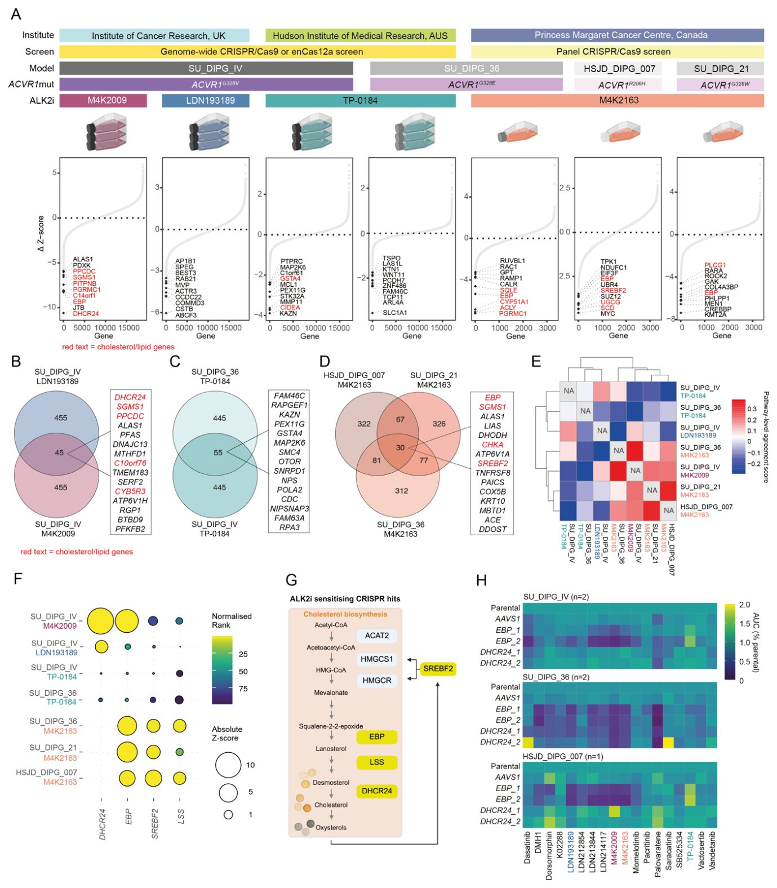
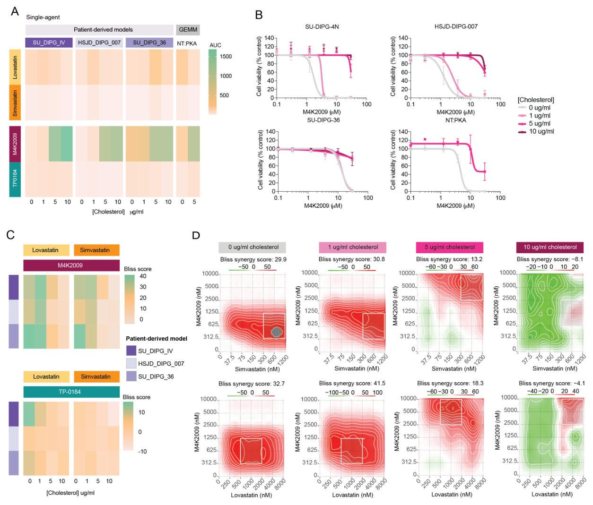
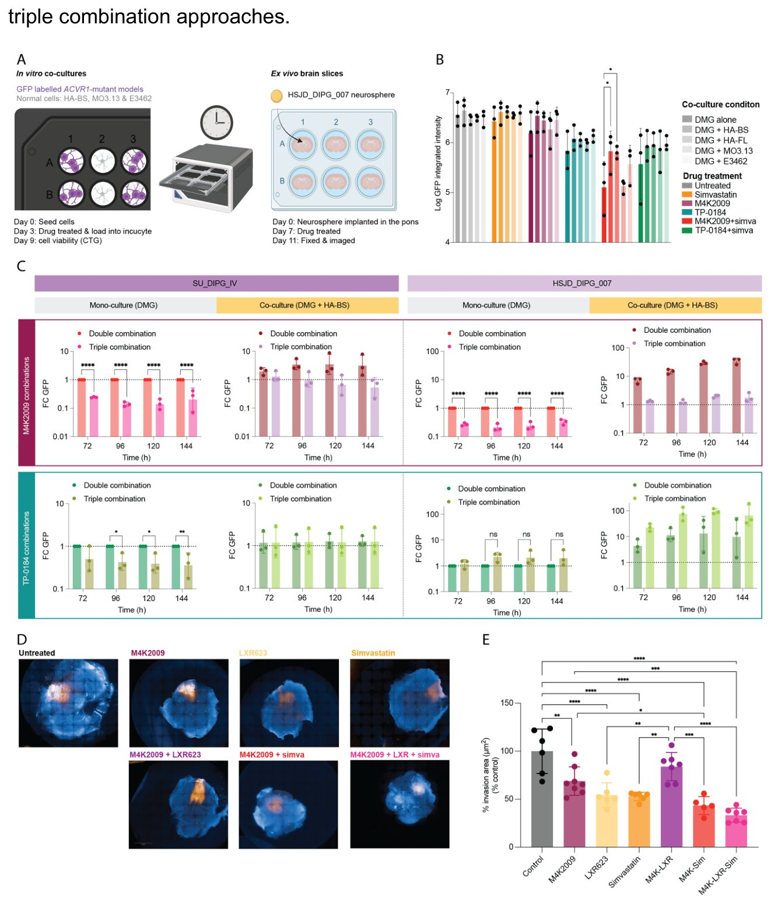
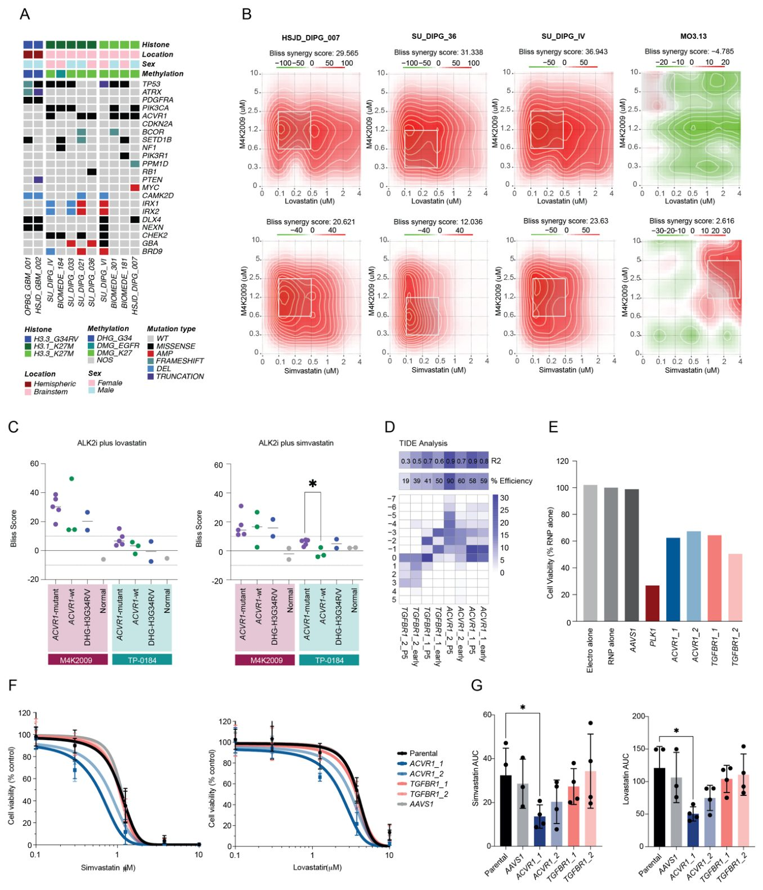
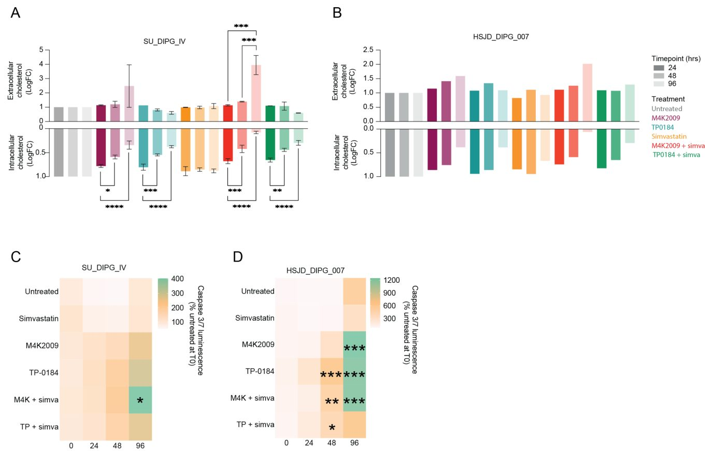
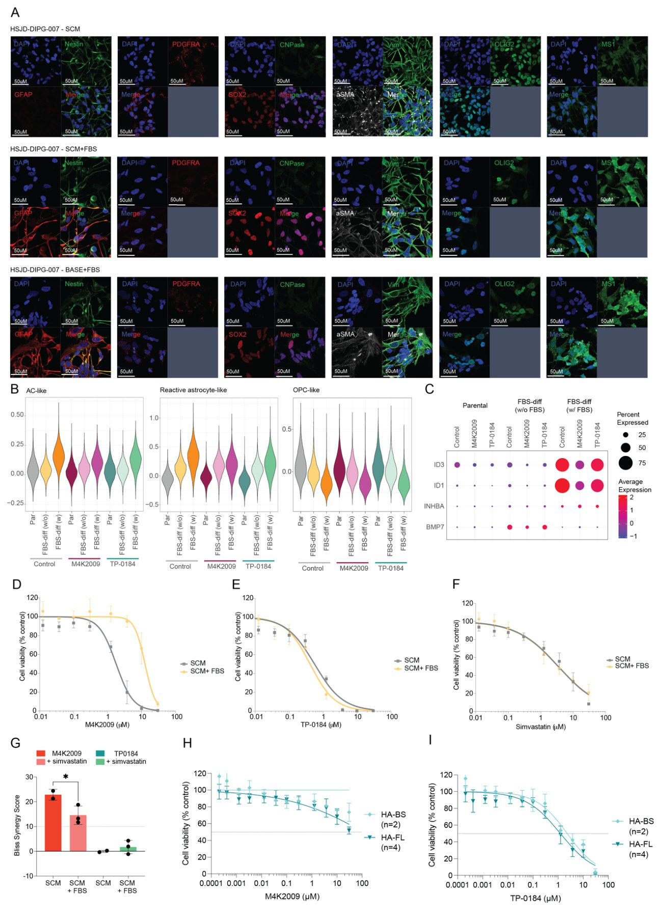
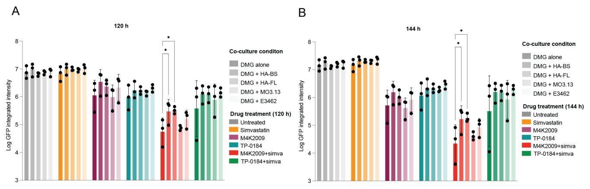

Мия ўсмасини даволашнинг янги усули холестерин алмашинувидан топилди


Rasmning to'liq tavsifi
1-rasm: ALK2 ingibitorini kombinatsiyalangan CRISPR skrininglari xolesterin gomeostazidagi bog'liqliklarni ochib beradi. A, Har bir CRISPR skriningi uchun har bir gen (x o'qi) bo'yicha D Z-ballarning (nazorat Z-bali – ALK2i Z-bali, y o'qi) sharshara diagrammalari. Har bir CRISPR skriningi uchun eng yaxshi 10 ta sezgirlashtiruvchi hitlar belgilandi, qizil matn xolesterin/lipid gomeostazida ishtirok etuvchi genlarni bildiradi. B, Saraton tadqiqotlari institutida o'tkazilgan CRISPR skrininglari uchun bir-birining ustiga tushuvchi ALK2 ingibitorini sezgirlashtiruvchi hitlarni (transport vositasi va ALK2i) ko'rsatuvchi Venn diagrammasi. Eng yaxshi 15 ta kesishuvchi genlar yonidagi katakchada keltirilgan, qizil matn xolesterin/lipid gomeostazida ishtirok etuvchi genlarni bildiradi. C, Xadson tibbiy tadqiqot institutida o'tkazilgan CRISPR skrininglari uchun bir-birining ustiga tushuvchi ALK2 ingibitorini sezgirlashtiruvchi hitlarni (transport vositasi va ALK2i) ko'rsatuvchi Venn diagrammasi. Eng yaxshi 15 ta kesishuvchi genlar yonidagi katakchada keltirilgan, qizil matn xolesterin/lipid gomeostazida ishtirok etuvchi genlarni bildiradi. D, Malika Margaret saraton markazida o'tkazilgan CRISPR skrininglari uchun bir-birining ustiga tushuvchi ALK2 ingibitorini sezgirlashtiruvchi hitlarni (transport vositasi va ALK2i) ko'rsatuvchi Venn diagrammasi. Eng yaxshi 15 ta kesishuvchi genlar yonidagi katakchada keltirilgan, qizil matn xolesterin/lipid gomeostazida ishtirok etuvchi genlarni bildiradi. E, CRISPR skrininglari o'rtasidagi genlar to'plami yo'li darajasidagi muvofiqlikni ko'rsatuvchi issiqlik xaritasi. Normalashtirilgan boyitish ballari (NES) har bir yo'l va tajriba uchun hisoblab chiqilgan va yo'l NES profillarining Pirson korrelyatsiyasi skrininglar orasidagi o'xshashlikni miqdoriy aniqlash uchun ishlatilgan. Yo'l darajasidagi muvofiqlik bali taqdim etilgan kalitga ko'ra rang bilan chizilgan. F, Oltita CRISPR skriningi bo'yicha (y o'qi) ustuvor hitlarning (x o'qi) mutlaq Z-balini (doira hajmi) va normalashtirilgan rangini (taqdim etilgan rang kalitiga ko'ra) ko'rsatuvchi pufakchali diagramma. G, Yuqoridagi CRISPR skrininglarida «hitlar» deb aniqlangan genlar tomonidan kodlangan xolesterin sintezi fermentlarini (sariq rangda) ajratib ko'rsatuvchi soddalashtirilgan xolesterin sintezi yo'li sxemasi. H, AAVS1 salbiy gRNA nazorati ishlatilgan holda, ustuvor hit genlarining CRISPR-Cas9 yo'naltirilgan gen nokautidan so'ng SU_DIPG_IV (yuqorida, n=2), SU_DIPG_36 (o'rtada, n=2) va HSJD_DIPG_007 da (pastda, n=1) ALK2i panelining AUC (ota-onaga nisbatan fold-change) ko'rsatuvchi issiqlik xaritasi. AUC (% ota-ona holati) taqdim etilgan kalitga ko'ra rang bilan chizilgan.
Диффуз марказий глиома даволаб бўлмайдиган мия саратони бўлиб қолмоқда. Тадқиқотчилар ACVR1 гендаги мутациялар ўсма ҳужайраларида холестерин алмашинувини қайта қуришини аниқладилар. ALK2 киназа ингибиторлари ва оддий статиларнинг комбинацияси сичқонларнинг умрини сезиларли даражада узайтирди.
Asosiysi
- ACVR1 мутациялари ALK2 киназасининг холестерин алмашинувидаги ролини очиб берди.
- Холестерин синтези генларини фаолсизлантириш ALK2 ингибиторлари таъсирини кучайтиради.
- ALK2 ингибитори ва статилар комбинацияси касалланган ҳайвонлар яшовчанлигини оширади.
Batafsil
H3K27 гистони ўзгарган диффуз марказий глиомалар (DMG) жуда паст яшовчанлик кўрсаткичи билан ажралиб туради. Беморларнинг тахминан 25 фоизида ALK2 киназасини кодовчи ACVR1 гени мутацияси учрайди. Гарчи ALK2 ингибиторлари фаол ишлаб чиқилаётган бўлса-да, улар тирик организмда якка тартибда паст самара кўрсатади ва тажриба ҳайвонлари яшовчанлигини бор-йўғи 10-15 фоизга оширади.
Бу қаршиликни енгиш учун олимлар беморлардан олинган ўсма моделларида CRISPR скрининги ва мультиомик таҳлил ўтказдилар. Натижада ALK2 сигнал йўли холестерин гомеостази билан боғлиқлиги аниқланди. Холестерин синтези ферментлари, жумладан DHCR24 ва EBP фаолиятини йўқ қилиш ўсма ҳужайраларининг ALK2 ингибиторларига сезувчанлигини оширди.
ALK2 ингибитори ва клиник амалиётда қўлланиладиган статилар комбинациясини сичқонларда синаб кўриш назорат гуруҳига нисбатан яшовчанлик медианасининг ишоначли ўсишини кўрсатди. Бироқ бу самара ўсманинг ҳужайра ҳолатига боғлиқ бўлиб, унинг дифференциялашуви синергизани камайтирди.
Cheklovlar
Натижалар in vivo доклиник моделлари ва ҳужайра линияларига асосланган бўлиб, клиник синовларни талаб қилади.
Maqolaning batafsil tahlili
Annotatsiya
Tarqalgan o'rta chiziq gliomasi H3K27me3 gistonining post-translatsion modifikatsiyasiga ta'sir qiluvchi o'zgarishlar bilan tavsiflanadigan epigenetik kasallik bo'lib, u epigenetik qayta tiklanishga olib keladi va noyob metabolik ehtiyojlarni keltirib chiqaradi. ACVR1 mutatsiyalari H3K27 o'zgargan bemorlarning taxminan 25%ida uchraydi va u kodlaydigan kinazga (ALK2) nisbatan tanlanuvchi bog'liqlikni yuzaga keltiradi, garchi ALK2 ingibitorlari in vivo sharoitda o'rtacha monoterapevtik samaradorlikni ko'rsatsa ham.
Mexanik asoslangan dori vositalarini aniqlash maqsadida ALK2 ingibitsiyasining hujumiy oqibatlarini chuqur tushunish uchun kompleks ko'pikli (multi-omiks) tahlil o'tkazildi. U xolesterin gomeostazida ALK2 ning yangi rolini ochib berdi, CRISPR va yuqori unumdorlikdagi dori skrininglari esa xolesterin metabolizmiga ta'sir qiluvchi moddalarni ALK2 ingibitorlariga nisbatan sezgirlashtiruvchi vositalar sifatida aniqladi.
Muhim
ALK2 ingibitorlarini klinik jihatdan yaxshi o'zlashtiriladigan statinlar bilan birgalikda qo'llash nazorat guruhiga nisbatan median yashash davomiyligining sezilarli darajada oshishiga olib keldi.
ALK2 ingibitorlari va xavfsiz statinlarni in vivo baholash transport vositasi bilan solishtirganda median yashash muddatining sezilarli o'sishini ko'rsatdi. Glioma hujayralarining oligodendrotsitlar ajdodiga o'xshash holatdan astrositga o'xshash hujayra holatiga majburiy differensiatsiyasi ALK2 ingibitorlariga sezgirlikning keskin pasayishiga va statinlar bilan sinergizmning yo'qolishiga olib keldi, bu holat glioma hujayralari normal astrositlar bilan birgalikda o'stirilganda ham kuzatildi.
Izoh
CRISPR — bu DNK ketma-ketligini aniq tahrirlash imkonini beruvchi kuchli molekulyar biologiya usuli.
Biz ALK2 signalizatsiyasining xolesterin gomeostazidagi ilgari noma'lum bo'lgan rolini aniqladik, u hujayra holatiga bog'liqligini ko'rsatdik va klinik amaliyotga joriy etish uchun ratsional kombinatsiyalangan strategiyani taklif qildik.
ACVR1 mutatsiyasiga ega bo'lgan tarqalgan o'rta chiziq gliomasining bemordan olingan modellarida ALK2 ingibitorlariga javobni multi-omiks tavsiflash o'zaro bog'langan metabolik va genetik bog'liqlikni ochib beradi, undan ALK2 ingibitorlarini xavfsiz statinlar bilan birlashtirish orqali terapevtik maqsadlarda foydalanish mumkin.
Kirish
Klinik kontekst va diffuz o'rta chiziq gliomasining epigenetik xususiyatlari
Diffuz o'rta chiziq gliomasi H3K27 o'zgarishlari bilan (DMG-H3K27), shu jumladan diffuz ichki pons gliomasi (DIPG) 9–15 oylik mediana yashash ko'rsatkichiga ega bo'lgan, o'nlab yillar davomida o'zgarmasdan qolayotgan davolab bo'lmaydigan tashxisdir. Kasallikning asosi H3K27me3 giston modifikatsiyasining buzilishi bilan bog'liq epigenetik disregulyatsiyadir. Bu buzilishlar lizinning 27-pozitsiyadagi metioninga almashinishi (H3K27M mutatsiyasi) yoki PRC2 polikomb-repressiv kompleksi bilan o'zaro ta'sir qiluvchi EZHIP oqsilining haddan tashqari ekspressiyasi tufayli yuzaga keladi. H3K27M mutatsiyasi PRC2 fermentativ kompleksi tomonidan H3K27me3 yorlig'ining o'rnatilishiga to'sqinlik qiladi va bu ushbu repressiv epigenetik belgining global o'zgarishiga olib keladi. Bunday siljishlar genlar ekspresiyasini o'zgartiradi va o'sma hujayralarini oligodendrositlar o'tmishdosh hujayralariga (OPCga o'xshash fenotip) o'xshash o'zak hujayrasiga o'xshash holatda ushlab turadi. Ushbu epigenetik qayta tiklanish DMG ning ko'payishi uchun juda muhim bo'lgan o'ziga xos metabolik ehtiyojlarni, jumladan glikoliz, xolesterin almashinuvi va oksidlovchi fosforillanishni keltirib chiqaradi.
Muhim
DMG-H3K27 kasalligi 9–15 oylik yashash medianasi bilan ajralib turadi va uning asosiy metabolik zaifliklari epigenetik qayta dasturlash bilan bog'liq.
ACVR1 mutatsiyalari va ALK2 ingibitorlarini izlash
DMG-H3K27 o'smalarining 20–25 foizida (asosan H3.1 giston mutatsiyalari bilan birgalikda) yuzaga keladigan somatik ACVR1 mutatsiyalari istiqbolli, ammo hozircha amalda qo'llanilmagan nishon hisoblanadi. ALK2 serin/treonin kinazasini kodlovchi ACVR1 da funksiyani oshiruvchi mutatsiyalarning aniqlanishi maqsadli davolash uchun ALK2 ingibitorlarini yaratishga turtki bo'ldi. Bularga kuchli LDN-193189 birikmasi, to'g'risigacha bo'lgan M4K2009 va M4K2163 birikmalari hamda klinik nomzod itaknosertib (TP-0184) kiradi. Ushbu moddalar turlicha kuch va selektivlik bilan ALK2 tomonidan boshqariladigan kanonik BMP signal yo'lini modulyatsiya qiladi. Kuchli va selektiv ALK2 ingibitorlarini ishlab chiqish bo'yicha katta sa'y-harakatlarga qaramay, ular hali klinik amaliyotga joriy etilmadi. Bu qisman ularning in vivo sharoitida monoterapiya sifatidagi past samaradorligi bilan bog'liq: yashash medianasining o'sishi atigi ~10–15% ni tashkil qiladi va oxir-oqibat barcha sichqonlar kasallikdan nobud bo'ladi. Dori vositalarini qayta maqsadga muvofiq qo'llashga qaratilgan sun'iy intellekt yondashuvi yordamida vandetanib (ALK2 ga ta'sir qiluvchi VEGFR/RET/EGFR ingibitoridan tashqari) va everolimus (mTOR ingibitoridan) kombinatsiyasi aniqlandi va u pre-klinik modellarda hayot davomiyligining shunga o'xshash uzayishini ko'rsatdi. ALK2 ingibitorlariga davolanish javobini yaxshiroq tushunish va yangi kombinatsiyalangan yondashuvlarni topish juda zarur.
Ehtiyot bo'ling
ALK2 ingibitorlari bilan monoterapiya sichqonlarning yashash medianasini faqat 10–15% ga uzaytiradi va kasallikdan qutqarmaydi, bu esa samarali kombinatsiyalarni talab qiladi.
Tadqiqotning maqsadlari va yondashuvlari
Ushbu tadqiqotda mualliflar multiomik va yuqori unumdor skrining yondashuvlaridan foydalangan holda, ACVR1 mutatsiyasiga ega bo'lgan DMG-H3K27 ning bemordan olingan bir nechta modellarida ALK2 ingibitsiyasining oqibatlarini baholadilar. Bu ALK2 ning xolesterin gomeostazidagi yangi rolini ochib beradi va ACVR1-mutantli DMG-H3K27 kontekstida o'sma hujayralarining ichki va tashqi mexanizmlaridan foydalangan holda selektiv ALK2 ingibitorlari bilan oson ko'chirilishi mumkin bo'lgan kombinatsiyalangan yondashuvni taklif qiladi.
Izoh
Multiomik yondashuv va yuqori unumdor skrining minglab birikmalarni bir vaqtning o'zida har tomonlama tahlil qilish uchun genomika, transkriptomika va metabolomika ma'lumotlarini birlashtiradi.
Natijalar
Drug-on CRISPR screens reveal loss of cholesterol homeostasis genes as sensitisers to ALK2 inhibitors
O'rta chiziqli diffuz glioma (DMG) kasalligida ALK2 ingibitorlarining ta'sirini kuchaytirishi mumkin bo'lgan yangi dori kombinatsiyalarini aniqlash maqsadida tadqiqotchilar turli xil kimyoviy tiplarga mansub to'rt xil birikmaning subletal konsentratsiyalaridan foydalangan holda ko'plab kombinatsiyalangan CRISPR skrininglarini o'tkazdilar. Ishda har biri o'ziga xos ACVR1 mutatsiyasiga ega bo'lgan va bemor hujayralaridan olingan to'rtta ACVR1-mutant DMG modellari ishlatildi (1a-rasm). Qo'llanilgan ALK2 ingibitorlari qatoriga klinik nomzod TP-0184, dori yaratish bosqichidagi M4K2009 va M4K2163 nomzodlari, shuningdek, ALK2 ga nisbatan turlicha selektivlik va faollikka ega bo'lgan LDN193189 vositasi kirdi (S1a-rasm va S1-jadval). Olimlar har bir skrining uchun Z-ballar farqini (Z-ball nazorat minus Z-ball ALK2 ingibitorini qo'llagandagi) hisoblab chiqib, so'ngra differensial xitlarni tartibladilar (1a-rasm va S2-jadval). Har bir muassasa doirasida skrininglar eng yaxshi 500 ta differensial xitlarning taxminan 6–10% qismini o'zaro bo'lishdi (1b-d rasmlar va S3-jadval), turli platformalar va ALK2 ingibitorlari solishtirilganda esa bu o'xshashlik pastroq bo'ldi (S1b-rasm), buni Jakkar o'xshashlik koeffitsientlari ham tasdiqlaydi (S1c-rasm).
Izoh
> GSEA — o'zaro bog'langan genlar guruhlari (masalan, ma'lum bir metabolik yo'l uchun javobgar bo'lganlar) muayyan tajribada birgalikda faollashishini yoki susayishini aniqlashga yordam beradigan bioinformatik tahlil usuli.
Shunga qaramay, ALK2 ingibitorlariga sezuvchanlikni oshiruvchi eng yuqori o'rindagi xitlar bo'yicha Genlar to'plamini boyitish tahlili (GSEA) o'tkazilganda, laboratoriyadan qat'i nazar, ko'proq selektiv M4K birikmalari uchun signal yo'llari darajasidagi mos kelish eng yuqori bo'lib chiqdi (1e-rasm). Bu qizil matn bilan belgilangan xolesterin biosintezi yo'llarining birlashishini ko'rsatdi (S1d-j rasmlar). Topilgan asosiy xitlar qatoriga mevalanat yo'lida ishlaydigan va xolesterin sintezi fermentlarini kodlovchi DHCR24 (24-degidroxolesterin reduktaza), EBP (emopamil bilan bog'lanuvchi oqsil) va LSS (lanosterin sintaza) kirdi. Shuningdek, hujayra ichidagi optimal xolesterin darajasini saqlab turish uchun musbat teskari aloqa halqasini boshqaradigan SREBP2 oqsilini kodlovchi SREBF2 (sterol regulyator elementiga bog'langan transkripsiya omili 2) ham topildi (1f-g rasmlar). Umuman olganda, ushbu xitlar kamroq selektiv TP-0184 bilan solishtirganda, ko'proq selektiv ALK2 ingibitorlari M4K2009 va M4K2163 bilan birgalikda o'tkazilgan CRISPR skrininglarida yuqoriroq o'rinlarni egalladi (1f-rasm).
320 ta bolalar turidagi diffuz yuqori darajadagi glioma (PDHGG) o'smalarining yig'ma ommaviy RNA-seq ma'lumotlar to'plamidan foydalangan holda, mualliflar MNP12.8 bo'yicha aniqlangan boshqa barcha kichik guruhlarga nisbatan DMG-H3K27 kichik guruhida xolesterin gomeostazi imzosining sezilarli darajada yuqori ekspressiyasini aniqladilar (S1k-rasm). Keyinchalik, tadqiqotchilar DMG-H3K27 o'smalarini ACVR1 mutatsiya holatiga ko'ra guruhlarga ajratdilar, bu esa ACVR1-mutant o'smalarda ACVR1-wt ga nisbatan xolesterin gomeostazi imzosining sezilarli darajada yuqori ekspressiyasini ko'rsatdi (S1l-rasm). Qolaversa, ACVR1-mutant va ACVR1-wt H3K27 o'zgargan DMG o'rtasidagi differensial ekspressiya tahlili hamda keyingi GSEA xolesterin gomeostazining sezilarli darajada boyiganini ko'rsatib, ACVR1/ALK2 ning xolesterin regulyatsiyasidagi potensial yangi rolini aniqlab berdi (S1m-rasm).
Muhim
> CRISPR skrininglari xolesterin gomeostazi genlarining (DHCR24, EBP, LSS, SREBF2) buzilishi ACVR1 mutatsiyasiga ega DMG hujayralarining ALK2 ingibitorlariga nisbatan sezuvchanligini oshirishini, bunday mutatsiyaga ega o'smalar esa yuqori xolesterin imzosini namoyon etishini ko'rsatdi.
Mualliflar EBP va DHCR24 ni tekshirib ko'rish uchun ustuvor vazifa sifatida tanladilar va ACVR1 mutatsiyasiga ega bo'lgan uchta bemor modeli asosida ushbu genlarni nishonga olish uchun ham genetik, ham farmakologik vositalardan foydalandilar. Ushbu genlarning CRISPR/Cas9 yordamida faoliyatsizlantirilishi AAVS1 nazoratiga nisbatan hujayralar hayotchanligini faqat minimal darajada kamaytirdi (S1n-rasm), biroq bir nechta ALK2 ingibitorlariga, eng asosiysi EBP faoliyatsizlantirilganda sezuvchanlikni oshirdi, garchi bu holat TP-0184 uchun kuzatilmadi (1h-rasm).
Ehtiyot bo'ling
> Eksperimentlar bemordan olingan hujayra modellari va bioinformatika ma'lumotlar bazalari yordamida bajarilgan; xolesterin genlarining genetik tormozlanishi ko'pchilik, ammo barcha ham ALK2 ingibitorlariga nisbatan zaiflikni oshirmadi (TP-0184 uchun bu ta'sir kuzatilmadi).
ALK2 ingibitorlari va statinlarning kombinatsiyasi PDHGG modellarida kuchli sinergizmni ko'rsatadi
Potentsial dori vositalari birikmalarini aniqlash uchun mualliflar turlicha selektivlik profiliga ega bo'lgan ALK2 ingibitorlari (M4K2009 yoki TP-0184) yordamida yuqori unumdor dorilar skriningidan foydalandilar (Rasm 2a). Har bir birikma uchun differensial barqaror Z-ballar hisoblab chiqildi (Jadval SN) va dastlabki 30 ta “hit” tahlili M4K2009 uchun neyron signallari, xolesterin almashinuvi va gormon retseptorlariga, TP-0184 uchun esa PI3K/AKT/MTOR, tirozin-kinaz signallari va metabolizmga yo'naltirilgan birikmalar ustunligini ko'rsatdi (Rasm 2b). Qizig'i shundaki, M4K2009 bilan bog'liq bo'lgan gormon retseptorlari hitlari qatoriga EBP ga nisbatan nojo'ya ta'siri ma'lum bo'lgan tamoksifen kabi bir nechta estrogen retseptorlari ingibitorlari ham kirdi.

Rasmning to'liq tavsifi
2-rasm: Yuqori samarali ALK2 ingibitori dori kombinatsiyasi skrininglari xolesterinni nishonga oluvchi ingibitorlarni asosiy kesishuvchi hitlar sifatida aniqlaydi. A, SU_DIPG_IV hujayralari yordamida 384 quduqli plastinkalarda amalga oshirilgan yuqori samarali ALK2 ingibitori (M4K2009 yoki TP-1084) kombinatsiyalangan skrininglarining sxemasi. B, M4K2009 (yuqorida) yoki TP-0184 (pastda) dori kombinatsiyasi skrininglaridan (n≥3) aniqlangan eng yaxshi 3% ALK2i sezgirlashtiruvchi hitlar bilan ifodalangan turli dori sinflarining ulushini ko'rsatuvchi ponchik diagrammalari. C, M4K2009 va TP-0184 o'rtasida bir-birining ustiga tushuvchi ALK2i sezgirlashtiruvchi dori hitlari (eng yaxshi 3%) Venn diagrammasi. Kesishuvchi hitlar uchun dori nishonlari va yo'l tafsilotlari quyidagi katakchada batafsil tavsiflangan. D, Bemorlardan olingan PDHGG modellari va PDHGG bo'lmagan modellar paneli bo'ylab statinlar va ALK2 ingibitorlari uchun konsentratsiya-javob egri chiziqlari (n≥3). Ma'lumotlar DMSO transport vositasi nazoratiga normalashtirilgan, ma'lumotlar o'rtacha ± SD sifatida ko'rsatilgan. Egri chiziqlar (ingibitor) va javob, o'zgaruvchan qiyalik, Prism'dagi to'rt parametr yordamida moslashtirilgan. E, Kichik guruh / genotip bo'yicha bo'lingan (n≥3) bemordan olingan PDHGG modellari va PDHGG bo'lmagan modellar (MO3.13, HA-FL va E3462) paneli bo'ylab statinlar va ALK2 ingibitorlari uchun aniqlangan GI50 qiymatlari. p qiymatlari bir tomonlama Anova yordamida hisoblangan, *= p<0.05. F, Bemorlardan olingan ACVR1-mutant va PDHGG bo'lmagan modellar (MO3.13 va HA-FL) panelida statinlar bilan kombinatsiyada M4K2009 (M4K) yoki TP-0184 (TP) uchun Bliss sinergiya ballarining issiqlik xaritasi (n=3). Bliss ballari > 10 sinergiyani bildiradi va <10 antagonizmni bildiradi va taqdim etilgan kalitga muvofiq rang bilan chizilgan. G, Uchta bemordan olingan PDHGG modelida va sichqonchaning ex vivo singen modelida (RCAS modeli n=1, bemordan olingan modellar n≥2) lovastatin bilan kombinatsiyada klinik ahamiyatga ega bo'lgan mTOR/ERK/MEK ingibitorlari yoki ALK2 ingibitorlari paneli uchun vaznli Bliss sinergiya ballarining ustunli diagrammasi. p qiymatlari bir tomonlama ANOVA yordamida hisoblangan (**p<0.0001). H, Uchta bemordan olingan PDHGG modelida va sichqonchaning ex vivo singen modelida (RCAS modeli n=1, bemordan olingan modellar n≥2) simvastatin bilan kombinatsiyada klinik ahamiyatga ega bo'lgan mTOR/ERK/MEK ingibitorlari yoki ALK2 ingibitorlari paneli uchun vaznli Bliss sinergiya ballarining ustunli diagrammasi. p qiymatlari bir tomonlama ANOVA yordamida hisoblangan (**p<0.0001).
Skrininglar orasidagi umumiy hitlarga HMG-CoA reduktaza orqali xolesterin sintezini to'xtatuvchi ingibitorlar (lovastatin va simvastatin), VEGFR/FGFR/EGFR retseptorli tirozin kinazlari, shuningdek ATR va PIM-kinaza kabi boshqa o'smaga aloqador kinazalar kirdi (Rasm 2c). CRISPR va dorilar skriningi natijalari xolesterin gomeostazida kesishgani sababli, tadqiqotchilar klinik amaliyotda qo'llaniladigan statinlarga e'tibor qaratishdi. Turli xil PDHGG kichik guruhlarini ifodalovchi bemordan olingan modellar paneli tekshirilganda (Rasm SN va Jadval SN), normal odam astrositlari (HA-FL, HA-BS), neyron o'zak hujayralari (E3462) va oligodendrotsitlarga (MO3.13) nisbatan simvastatin va M4K2009 ga turlicha sezuvchanlik kuzatildi (Rasm 2d-e).
Muhim
Statinalar va M4K2009 kombinatsiyasi ACVR1 mutatsiyasiga ega modellar panelida kuchli sinergizmni (Bliss >10) namoyon etdi, oddiy hujayralarda esa faqat kuchsiz qo'shma ta'sir yoki antagonistlik (<2) kuzatildi, bu esa terapevtik oyna mavjudligini ko'rsatadi.
Bliss tahlillari statinalar va M4K2009 o'rtasida ACVR1-mutantli modellar panelida mustahkam sinergik o'zaro ta'sirni (>10) ko'rsatdi, sinovdan o'tgan normal liniyalarda esa faqat zaif qo'shma ta'sir yoki antagonistlik (<2) qayd etildi (Rasm 2f va Rasm SN). Bu potensial terapevtik oynaning mavjudligidan dalolat beradi. Shuningdek, biz statinalar va M4K2009 o'rtasidagi sinergizmni giston-mutantli PDHGG modellarining kengroq panelida ham kuzatdik (Rasm SN), bu esa ALK2 ingibitorlari kombinatsiyalarini PDHGG ning boshqa kichik guruhlarida ham o'rganish muhimligini ko'rsatadi.
ALK2 ingibitorlari bilan statinlarning kuzatilgan sinergik ta'siri PI3K/mTOR va MAPK yo'llari ingibitorlarini o'z ichiga olgan boshqa klinik ahamiyatga ega nishonli preparatlar bilan taqqoslandi. Garchi ba'zi sinergizm kuzatilgan bo'lsa-da, bu kombinatsiyalar asosan qo'shma ta'sir ko'rsatdi (o'rtacha vaznli Bliss ballari 1-8 oralig'ida) va M4K2009 va statinalar juftligiga qaraganda sezilarli darajada past bo'ldi (o'rtacha vaznli Bliss bali = 22) (Rasm 2g-h). Ushbu kombinatsiya, shuningdek, statin va TP-0184 birikmasidan ham ustun keldi (o'rtacha Bliss bali = 5), oxirgi birikmaning ALK5 (TGFBR1) ga nisbatan ALK2 uchun selektivligi M4K2009 ga qaraganda ancha past (mos ravishda 7 va 187 barobar selektivlik).
Izoh
CRISPR/Cas9 texnologiyasi muayyan genlarni aniq nishonga olib o'chirish imkonini beradi, TIDE tahlili esa bu jarayonning samaradorligini baholaydi.
Statinlarga sezuvchanlikda ALK2 va ALK5 faolligining o'rnini baholash uchun SU_DIPG_IV hujayralarida ACVR1 (ALK2 ni kodlaydi) yoki TGFBR1 (ALK5 ni kodlaydi) genlarini CRISPR/Cas9 yordamida o'chirish tajribalari o'tkazildi va o'chirish samaradorligi TIDE tahlili orqali tekshirildi (Rasm SN). ACVR1 va TGFBR1 ni faqat o'chirish hujayralar hayotchanligining qisman pasayishiga olib keldi (Rasm SN), biroq statin bilan davolashga nisbatan sezuvchanlik faqat ACVR1 o'chirilganda kuzatildi (Rasm SN).
Ushbu kuzatishlar shuni ko'rsatadiki, ALK2 ingibitorlarining DMG sharoitida xolesterin gomeostaziga ta'siri va natijada xolesterin biosintezi ingibitorlari bilan yuqori darajadagi sinergizm ALK2 ning o'zi tomonidan boshqariladi, bu ALK5 ga qaratilgan nojo'ya ta'sirlar bilan bog'liq emas.
Multi-oもちろん profilli tahlil xolesterin гомеостазиda ALK2 ning yangi rolini ochib beradi
ALK2 signallashuvi va xolesterin metabolizmi o'rtasidagi mumkin bo'lgan mexanik bog'liqlikni o'rganish uchun ALK2 ingibirlanishining global quyi oqimdagi oqibatlari transkriptomik, proteomik va metabolomik darajalarda baholandi (Rasm 3a). Transkriptomika va proteomikaning birlashtirilgan tahlili shuni ko'rsatdiki, M4K2009 yoki TP-0184 bilan davolash BMP signallashuvi markeri ID1 ning pasayishiga olib keladi, bu har ikki ingibitorning nishonga aniq ta'sir qilishini tasdiqlaydi (Rasm 3b). Har ikki birikma uchun eng kuchli yuqoriga regulyatsiya qilingan gen/oqsil xolesterin eksportchisi ABCA1 bo'lib chiqdi, u odatda yuqori xolesterin sharoitida oksisterol bog'lanishi va jigar X-retseptori (LXR) transkripsiya omilining faollashuvi orqali ishga tushadigan teskari aloqa halqasi ostida ko'tariladi (Rasm 3b). Immunoflyoressent bo'yash ALK2 ingibitori bilan 24 soatlik davolashdan keyin ABCA1 ekspressiyasining oshishini tasdiqladi (S3a-b-rasm). Differensial ekspressiya qilingan genlar/oqsil GSEA tahlilidan o'tkazilib, xolesterin sintezi va transport/eksport yo'llarini mos ravishda kamaygan yoki boyigan sifatida ko'rsatib berdi (Rasm 3c va S3c-rasm).

Rasmning to'liq tavsifi
3-rasm: ACVR1-mutant bemordan olingan modellarda ALK2 ingibitoriga javobning ko'p omikali profillashi xolesterin gomeostazida yangi rolni ochib beradi. A, ACVR1-mutant bemordan olingan modellar, dori muolajalari va amalga oshirilgan quyi oqimdagi ko'p omikali tahlilni tafsilotlovchi sxema. B, M4K2009 (chapda) yoki TP-0184 (o'ngda) ning ekvipotentsial konsentratsiyalari bilan 24 soatlik davolanishdan so'ng uchta ACVR1-mutant bemordan olingan modellar bo'ylab differensial ekspressiyalangan genlar (qizil/ko'k) va oqsillar (sariq/siyohrang) issiqlik xaritasi. Ma'lumotlar uchta biologik takrorning o'rtachasi hisoblanadi. Qizil matn xolesterin/lipid gomeostazida ishtirok etuvchi genlarni, siyohrang matn esa BMP signalizatsiyasida ishtirok etuvchilarni bildiradi. Ekspresiya taqdim etilgan kalitga ko'ra rang bilan chizilgan. C, Uchta ACVR1-mutant bemordan olingan modellar bo'ylab differensial ekspressiyalangan genlarning GSEA tomonidan aniqlangan boyitilgan yoki kamaygan yo'llarning pufakchali diagrammasi. Qizil matn xolesterin/lipid gomeostazi bilan bog'liq yo'llarni bildiradi. NES bali taqdim etilgan kalitga ko'ra rang bilan chizilgan va LOD doira hajmi bilan ko'rsatilgan. D, M4K2009 yoki TP-0184 ning ekvipotentsial konsentratsiyalari bilan 24 soatlik davolanishdan so'ng uchta ACVR1-mutant bemordan olingan modellarda lipid sinfi metabolitlarining ekspresiyasini ko'rsatuvchi issiqlik xaritasi. Ma'lumotlar har bir bemordan olingan model uchun nazorat (DMSO) shartiga normalashtirilgan. Ma'lumotlar beshta biologik takrorning o'rtachasi hisoblanadi. Ekspresiya taqdim etilgan kalitga ko'ra rang bilan chizilgan. E, 24 soatlik ALK2i davolashdan keyin yuqori (qizil) va past (ko'k) bo'lgan xolesterin sintezi fermentlari va metabolitlarini ta'kidlaydigan soddalashtirilgan xolesterin biosintezi yo'li sxemasi. F, Uchta ACVR1-mutant bemordan olingan modellar bo'ylab 24 soatlik yagona agent (M4K2009, TP-0184, simvastatin) yoki kombinatsiyalangan davolashdan (ALK2 ingibitori + simvastatin) so'ng xolesterin gomeostazi va BMP signalizatsiyasi bilan bog'liq gen ekspresiyasini ko'rsatuvchi issiqlik xaritasi. Ma'lumotlar uchta biologik takrorning o'rtachasi hisoblanadi. Ekspresiya taqdim etilgan kalitga ko'ra rang bilan chizilgan. G, Uchta ACVR1-mutant bemordan olingan modellarda ekvipotentsial konsentratsiyalardan foydalangan holda 48 soatlik yagona agent yoki kombinatsiyalangan davolanishdan keyingi Cholesterol-Glo lyuminestsensiyasi (y o'qi). Ma'lumotlar CTG lyuminestsensiyasiga normalashtirilgan, o'rtacha ± SD sifatida ko'rsatilgan (n=3). p qiymatlari davolanmagan shartga nisbatan ikki tomonlama ANOVA (* p<0.05, p<0.01, * p<0.001, ** p<0.0001) yordamida hisoblangan. H, NSG sichqonlarida ortotopik CDX modeli HSJD_DIPG_007-Akaluc yordamida in vivo samaradorlik (omon qolish) va o'sma yuki tajribalarining sxemasi. Transport vositasi, M4K2009 50 mg/kg, simvastatin 20 mg/kg yoki M4K2009 50 mg/kg va simvastatin 20 mg/kg ning og'iz orqali dozalanishi (PO) 5 kun davomida, 2 kun tanaffus bilan amalga oshirildi. I, Log-rank (Mantel-Cox) testi yordamida o'sma tashuvchi sichqonlarda (HSJD_DIPG_007-Akaluc) yagona agent (M4K2009 50 mg/kg, simvastatin 25 mg/kg) yoki kombinatsiyalangan davolashning omon qolish tahlili (transport vositasi va simvastatin p=0.0073, transport vositasi va M4K2009 p=0.0003, transport vositasi va M4K2009 plus simvastatin p=0.0031, M4K2009 va M4K2009 plus simvastatin ns p=0.0695). Sichqonlarga PO orqali 5 kun davomida / 2 kun tanaffus bilan doza berildi. Transport vositasi, n=13; simvastatin, n=11; M4K2009, n=9; M4K2009 plus simvastatin, n=9. Kunlardagi o'rtacha omon qolish muddati (ms) qavs ichida ko'rsatilgan. J, Bioluminessensiya intensivligi (BLI) IVIS tasvirlash yordamida aniqlandi va o'sma yukining surrogat o'lchovi sifatida ishlatildi. Har bir sichqoncha uchun umumiy oqim logarifmi (foton/sek) minus fon hisoblab chiqildi va davolash qo'liga qarab chizildi; ko'rsatilgan ma'lumotlar davolanishdan keyingi 105-kunga to'g'ri keladi. Ma'lumotlar o'rtacha ± SD sifatida ko'rsatilgan. Nuqtalar har bir sichqoncha uchun individual BLI signalini bildiradi. p qiymatlari transport vositasi qo'liga nisbatan bir tomonlama ANOVA ( p<0.05) yordamida hisoblangan.

Izoh
> GSEA — bu biologik bog'langan genlar guruhi (masalan, xolesterin uchun javobgar) yaxlit ravishda o'zgarishini baholaydigan bioinformatika usuli.
Global metabolomika shuni ko'rsatdiki, ALK2 ingibitorini qo'llash metabolomik o'zgarishlar qatoriga olib keladi, eng ko'p o'zgarishlar lipidlar sinfiga to'g'ri keladi (Rasm 3d, S3d-rasm va 6-jadval). Muhimi shundaki, biz kuzatgan ekspressiya o'zgarishlari hujayraviy xolesterin darajasining pasayishiga va DHCR24 (CRISPR skrining xiti) tomonidan katalizlanadigan xolesterin sintezining bevosita o'tmishdoshi bo'lgan desmosterolning oshishiga olib keldi (Rasm 3d). Desmosterol LXR maqsadli genlarini, jumladan ABCA1 ni bog'lashi va faollashtirishi ko'rsatilgan; bu yerda biz ekzogen desmosterol qo'shilgan ACVR1-mutant hujayralar ABCA1 IF bo'yashining kuchayishini ko'rsatamiz (S3a-b-rasm). ALK2 ingibitorini qo'llash, shuningdek, lipid va sterol biosintezining asosiy metaboliti va cheklovchi substrati bo'lgan Koenzim A miqdorining kamayishiga olib keldi (S3e-rasm). Koenzim A ning o'tmishdosh metaboliti (4'-fosfopantetein) PPCDC tomonidan sintez qilinadi; PPCDC geni ALK2 ingibitoriga sezgir qiluvchi CRISPR xiti sifatida aniqlangan (1a-b-rasm). Qizig'i shundaki, M4K2009 bilan davolashdan keyin 3-gidroksi-3-metilglutarat metaboliti barqaror ravishda oshdi, bu HMG-CoA metabolizmining pasayishini ko'rsatadi, ammo bu TP-0184 bilan davolashdan keyin modellarda ko'proq o'zgaruvchan edi (S3f-rasm).
M4K2009 va TP-0184 yagona preparat sifatida xolesterin gomeostaziga bir xil ta'sir ko'rsatishiga qaramay, biz statin va M4K2009 kombinatsiyalangan davolashda statin va TP-0184 ga nisbatan doimiy ravishda kuchliroq sinergiyani kuzatdik. Buni yanada o'rganish uchun biz ALK2 ingibitori va HMG-CoA reduktaza ingibitori simvastatinning kombinatsiyalangan davolashidan keyin gen ekspressiyasi o'zgarishlarini (RNAseq yordamida) va xolesterin darajasini (CholesterolGlo tahlili yordamida) baholadik. Ajablanarlisi shundaki, ALK2 ingibitori va simvastatinni yagona preparat sifatida qo'llash xolesterin gomeostaziga nisbatan qarama-qarshi transkripsion javoblarga olib keldi (Rasm 3e), bu turli ta'sir mexanizmlaridan dalolat beradi.
Muhim
> ALK2 ni ingibirlash va simvastatin qarama-qarshi genetik ta'sir ko'rsatadi: statin yetishmovchilik teskari aloqasini faollashtiradi, ALK2 ingibitorlari esa xolesterin sintezi genlarini o'chirib, hujayra ichidagi xolesterinni 11-48% ga kamaytiradi.
Simvastatin bilan davolash xolesterin sintezi/importi genlarining (jumladan HMGCR, EBP, DHCR24, LSS va LDLR) yuqoriga regulyatsiyasiga va xolesterin eksporti genlarining (ABCA1/G1) pastga regulyatsiyasiga olib keldi (Rasm 3e). Bu HMG-CoA reduktazasi ingibirlanganidan keyin xolesterin yetishmovchiligini kamaytirish uchun ishlatiladigan SREBP2 vositasidagi xolesterin gomeostazi teskari aloqa halqasining faollashishiga mos keladi, shunga muvofiq biz xolesterin darajasining atigi 9-18% ga o'rtacha pasayishini kuzatdik (Rasm 3g). Simvastatin bilan davolash, shuningdek, faol ALK2/BMP signallashuvi bilan bog'liq marker genlarning (masalan, ID1/3 va SMAD5) yuqoriga regulyatsiyasiga olib keldi, bu xolesterin gomeostazida ALK2 ning yangi rolini qo'llab-quvvatlaydi (Rasm 3e). Aksincha, ALK2 ingibitorini qo'llash xolesterin sintezi genlarining (Rasm 3e), shu jumladan SREBP2 ni kodlovchi SREBF2 transkripsiya omilining to'liq pastga regulyatsiyasiga olib keladi, bu buzilgan teskari aloqa halqasini ko'rsatadi va hujayra ichidagi xolesterinning 11-48% ga ko'proq kamayishiga olib keladi (Rasm 3g). Biz mos ravishda LXR-alfa va SREBP1 transkripsiya omillarini kodlovchi NR1H3 va SREBF1 ekspressiyasining bir vaqtning o'zida oshishini kuzatamiz, bu yog 'kislotalari va lipid metabolizmi bilan bog'liq boshqa LXR maqsadli genidir (Rasm 3e). Shuningdek, biz past zichlikdagi lipoprotein retseptorining (LDL-R) E3 ubiquitin ligazaga induksiya qilinadigan degradatori bo'lgan IDOLni kodlovchi MYLIP ekspressiyasining oshishini (Rasm 3e) va keyinchalik LDL-R oqsili ekspressiyasining pasayishini kuzatdik (S3g-rasm).
M4K2009 yoki TP-0184 plus simvastatin bilan kombinatsiyalangan davolashdan keyin BMP signallashuvi ekspressiyasining bostirilishi saqlanib qoladi, biroq xolesterin gomeostazi genlari ekspressiyasida va SREBF2 faollashuvida keskin farqlar mavjud (Rasm 3e). M4K2009 ni o'z ichiga olgan kombinatsiyalangan davolash simvastatin tomonidan faollashtirilgan teskari aloqa halqasini samaraliroq bostiradi, xolesterin biosintezi genlarining qayta ekspressiyasini cheklaydi va oshirilgan xolesterin eksportini (ABCA1) hamda kamaytirilgan importini (MYLIP) saqlab qoladi (Rasm 3f). Aksincha, TP-0184 kombinatsiyalangan davolashdan keyingi ekspressiya o'zgarishlari faqat simvastatin bilan davolashdan keyin kuzatilgan o'zgarishlarga yaqinroq o'xshaydi. Shunga muvofiq, biz uchta ACVR1-mutant DMG modelida M4K2009/statin kombinatsiyalangan davolashdan keyin hujayra ichidagi xolesterin darajasining eng katta pasayishini (70-80%) ko'ramiz (Rasm 3g va S3h-rasm).
Ehtiyot bo'ling
> Sinergizm va metabolizmni baholash bo'yicha barcha tajribalar laboratoriya modellari va hujayra liniyalarida o'tkazilgan, shuning uchun natijalarni bevosita bemorlarga ko'chirish klinik tekshiruvni talab qiladi.
M4K2009 va simvastatin kombinatsiyasining in vivo samaradorligi
In vitro sharoitida kuzatilgan kuchli sinergik ta'sirni hisobga olgan holda, mualliflar M4K2009 va simvastatin kombinatsiyasining terapevtik samaradorligini ACVR1 mutatsiyasiga ega bo'lgan bemordan olingan diffuz miya ko'prigi gliomasi (DMG) miyadagi ortotopik modeli (HSJD_DIPG_007-AKAluc) yordamida in vivo baholadilar (3h-rasm). NSG sichqonlarida dastlabki o'tkazilgan o'zlashtirilish testlari har ikki preparat uchun maksimal o'zlashtiriladigan doza (MTD) 50 mg/kg ekanligini aniqladi (S3i-rasm). Farmakokinetik tahlil shuni ko'rsatdiki, 20 mg/kg va 50 mg/kg simvastatin doiralari miya ko'prigida solishtiriladigan konsentratsiyalarni hosil qiladi (taxminan 10 mkm, bu in vitro GI50 qiymatlaridan 0.1–1 mkm dan 10 marta ko'p) (S3j-rasm).
Shu sababli, uzoq muddatli davolanishda toksiklik xavfini kamaytirish uchun pastroq doza tanlandi. Har bir preparat bilan monoterapiya nazorat guruhiga ( erituvchi) nisbatan median yashovchanlikni 10% ga sezilarli darajada uzaytirdi: simvastatin uchun p = 0.0073 va M4K2009 uchun p = 0.0003 (3i-rasm). Kombinatsiyalangan davolash guruhi nazoratga nisbatan median yashovchanlikni 59 kunga (20%) uzaytirdi (356 kunga qarshi 297 kun, p = 0.0031), M4K2009 monoterapiyasiga nisbatan 20 kunga statistik ahamiyatga yaqinlashgan holda (356 kunga qarshi 336 kun, p = 0.0695) va simvastatin monoterapiyasiga nisbatan 17 kunga (356 kunga qarshi 339 kun, p = 0.9215) uzaytirdi, shuningdek nazoratga nisbatan biolüminestsent signalini (BLI) sezilarli darajada kamaytirdi (p = 0.0254) (3i-j-rasm).
M4K2009 va statinlarni ACVR1-mutant DMG da qo'llash uchun rag'batlantiruvchi asos berishiga qaramay, barcha sichqonlar oxir-oqibat kasallikdan nobud bo'ldi, bu esa javob mexanizmlarini chuqurroq tushunish zarurligini ta'kidlaydi.
Muhim
M4K2009 va simvastatin kombinatsiyasi DMG modelidagi sichqonlarning median yashovchanligini 20% ga uzaytiradi (356 ga qarshi 297 kun, p=0.0031) va o'simta biolüminestsensiyasini kamaytiradi.
ALK2 ingibitorlarining DMG hujayralariga ta'siri ekzogen xolesterin yordamida tiklanishi mumkin
Tadqiqotchilar in vivo sharoitdagi kombinatsiyalangan javobning in vitro dagi kuchli sinergizmga nisbatan pasayishi normal astrositlar tomonidan mikroatrof-muhit orqali xolesterin yetkazib berilishi bilan bog'liq bo'lishi mumkinligini taxmin qilishdi. Shuning uchun ular inson (in vitro) va sichqon (ex vivo) modellarida muhitga ekzogen xolesterin qo'shilgan yoki qo'shilmagan holda har bir ingibitor uchun konsentratsiya-javob egri chiziqlarini tuzdilar. Bu faqat M4K2009 qo'shilgandan so'ng hujayralar hayotiyligining dozasiga bog'liq ravishda keskin tiklanishiga olib keldi (GI50 da taxminan 1-2 logarifmik o'sish), ammo TP-0184 yoki statin bilan davolashda bunday holat kuzatilmadi (4a-b-rasm).
Bundan tashqari, ALK2 ingibitorlari va statinlar o'rtasida kuzatilgan kuchli sinergik o'zaro ta'sir ekzogen xolesterin konsentratsiyasining oshishi bilan dozasiga bog'liq ravishda yo'qoldi, bu ayniqsa M4K2009 kombinatsiyalarida yaqqol namoyon bo'ldi (4c-d-rasm). Xolesterin sintezi va eksportining ushbu fenotip modulyatorlari sifatidagi hissami baholash uchun vaqt o'tishi bilan ichki va tashqi (muhitda aniqlangan) xolesterin hamda kaspaza 3/7 faollashuvi (apoptoz belgisi) o'lchandi. M4K2009 va simvastatin kombinatsiyalangan davolash ichki xolesterin darajasining eng katta pasayishiga va vaqt o'tishi bilan tashqi xolesterinning mos ravishda oshishiga olib keldi, bu TP-0184 uchun kuzatilmadi (S4a-b-rasm).
Bu o'zgarishlar 96-soatda cho'qqisiga chiqdi va kaspaza 3/7 faollashuvi bilan bir vaqtga to'g'ri keldi (S4c-d-rasm), bunda yakka preparat ta'siri SU_DIPG_IV ga nisbatan HSJD_DIPG_007 da yuqori bo'ldi.
Izoh
Ekzogen xolesterin — o'simta hujayralari muhitdan xolesterin yetishmovchiligini qoplashi mumkinligini tekshirish uchun ozuqa muhitiga tashqaridan qo'shiladigan xolesterin.
Ehtiyot bo'ling
Tajribadagi barcha hayvonlar yashovchanlikning oshishiga qaramay oxir-oqibat o'simtadan nobud bo'ldi, qarshilik mexanizmlari esa qo'shimcha o'rganishni talab qiladi.
Differentiation of cells to an AC-like cell state abrogates the sensitivity to ALK2 inhibition
Tadqiqotchilar hujayra populyatsiyalaridagi muvozanatning oligodendrotsitlar o'tmishdoshlariga o'xshash holatdan (OPC-like) astrositlarga o'xshash holatga (AC-like) o'zgarishi o'sma hujayralarining ALK2 ingibitori, statinlar yoki ularning kombinatsiyasiga qanday ta'sir qilishini aniqlashdi. In vitro sharoitida sun'iy differentsiatsiyani qo'zg'atish uchun HSJD_DIPG_007 liniyasidagi hujayralar 10% homila qoramol zardobi (FBS) qo'shilgan muhitda 20 dan ortiq passaj davomida yetishtirildi [10, 13]. Tahlillar shuni ko'rsatdiki, FBS muhitidagi hujayralar kattaroq va yassi shaklga ega bo'lib (Rasm 5b-c), o'sish surati sekinlashgan (Rasm 5d) va bazal ichki xolesterin miqdori sezilarli darajada oshgan (Rasm 5e).

Rasmning to'liq tavsifi
5-rasm: Hujayralarning AC-simon hujayra holatiga differentsiatsiyasi ALK2 ingibitsiyasiga sezgirlikni yo'q qiladi. A, Turli xil FBS-differentsiatsiya muhiti sharoitlari va keyingi amalga oshirilgan quyi oqim tavsifining qisqacha mazmuni. B, Ko'rsatilgan muhitda o'stirilgan HSJD_DIPG_007 hujayralarining yorug'lik maydoni tasvirlari (10x ob'ektiv). C, QuPath yordamida turli xil muhit sharoitlarida o'stirilgan HSJD_DIPG_007 hujayralarining alohida hujayra maydonining (cm2) miqdoriy baholanishi. p qiymatlari SCM shartiga nisbatan bir tomonlama ANOVA (** p<0.0001) yordamida hisoblangan. Nuqtalar alohida hujayralarni bildiradi. D, Ko'rsatilgan muhitda o'stirilgan HSJD_DIPG_007 hujayralari uchun o'sish egri chiziqlari va hisoblangan ikkilanish vaqtlari. E, Turli xil muhit sharoitlarida o'stirilgan HSJD_DIPG_007 hujayralarida hujayra ichidagi xolesterin darajasini o'lchaydigan Cholesterol-Glo lyuminestsensiyasi. Hujayralar 16 soat davomida ikkita 96 quduqli plastinkalarda har birida 10 000 hujayradan uchta texnik takroriy nusxada ekilgan. Ma'lumotlar o'rtacha ± SD sifatida ko'rsatilgan (n=3). p qiymatlari SCM shartiga nisbatan juftlanmagan t-test (p<0.01, * p<0.001) yordamida hisoblangan. F, Turli xil muhit sharoitlarida o'stirilgan HSJD_DIPG_007 hujayralarida hujayra markerlarining (nestin, MS1, SOX2, OLIG2, PDGFRA, GFAP, vimentin va CNPase) o'rtacha immunoflyoressent bo'yalishining miqdoriy baholanishi. p qiymatlari SCM shartiga nisbatan bir tomonlama ANOVA (* p<0.05, p<0.01, * p<0.001 ** p<0.0001) yordamida hisoblangan. Nuqtalar alohida hujayralarni bildiradi. G, Turli xil muhit sharoitlarida o'stirilgan HSJD_DIPG_007 hujayralari uchun scRNA-seq ma'lumotlarining UMAP ko'rinishi; FBS bilan differentsiatsiyalangan hujayralar ushbu tajriba uchun ham FBS bilan (FBS bilan differentsiatsiyalangan) va FBS siz (FBS siz differentsiatsiyalangan) ekilgan va 24 soat davomida dorining GI50 konsentratsiyalari (yoki transport vositasi DMSO) bilan davolangan. H, Dori bilan yoki dori bilan davolashsiz har bir yetishtirish sharti uchun AC-simon, reaktiv astrosit-simon va OPC-simon ekspresiya imzo ballarini ko'rsatuvchi pufakchali diagramma. O'rtacha imzo ekspresiyasi taqdim etilgan kalitga ko'ra rang bilan chizilgan. Doira hajmi gen imzosini ifodalovchi hujayralar foizini ko'rsatadi. I, Har bir yetishtirish sharti va dori bilan davolash uchun xolesterin biosintezi ekspresiya bali bo'yicha rang berilgan barcha yagona yadrolar uchun hujayra sikli ballari (y o'qi) va astrosit (AC-simon) va oligodendrotsit o'tmishdoshi hujayrasi (OPC-simon) ballarining (x o'qi) 2D ko'rinishi. J, Har bir yetishtirish sharti va dori bilan davolash uchun xolesterin eksporti ekspresiya bali bo'yicha rang berilgan barcha yagona yadrolar uchun hujayra sikli ballari (y o'qi) va astrosit (AC-simon) va oligodendrotsit o'tmishdoshi hujayrasi (OPC-simon) ballarining (x o'qi) 2D ko'rinishi. K, Har bir yetishtirish sharti va dori bilan davolash uchun BMP signalizatsiyasi ekspresiya bali bo'yicha rang berilgan barcha yagona yadrolar uchun hujayra sikli ballari (y o'qi) va astrosit (AC-simon) va oligodendrotsit o'tmishdoshi hujayrasi (OPC-simon) ballarining (x o'qi) 2D ko'rinishi.
Izoh
> scRNAseq (bir hujayrali RNK sekvenirashi) — minglab genlarning ekspressiyasini har bir alohida hujayrada o'rganish, yashirin kenja turlarni va ularning populyatsiyadagi ulushini aniqlash imkonini beruvchi genetik tahlil usuli.
Immunoflyuorestsentiya va scRNAseq usullari ota-ona hujayralarga nisbatan astrositlar (GFAP/vimentin) hamda neyron (MS1) markerlari oshganini, oligodendrotsitlar va o'zaklik markerlari (OLIG2/PDGFRA/SOX2) esa kamayganini tasdiqladi (Rasm 5f va Rasm 5a). Ota-ona va FBS ta'sirida differentsiatsiyalashgan HSJD_DIPG_007 hujayralari ustida bir hujayrali RNK sekvenirashi bajarildi. UMAP proyeksiyasida namunalarning ajralishiga asosiy sabab kultivatsiya sharoiti ekanligi aniqlandi (Rasm 5g-h). Diferentsiatsiyalashgan madaniyatlarda AC-like va reaktiv astrosit-like profillariga ega hujayralar ulushi oshgani, OPC-like hujayralar esa kamaygani kuzatildi (Rasm 5h).
Muhim
> Diffuz ko'prik gliomasi (DMG) hujayralarining astrositga o'xshash (AC-like) holatga o'tishi ALK2 ingibitori M4K2009 ga nisbatan sezuvchanlikning yo'qolishiga olib keladi.
FBS mavjud bo'lgan muhitda qisqa muddatli ALK2 ingibitori bilan davolash AC-like hujayralar ulushining o'rtacha kamayishiga va OPC-like hujayralarning ko'payishiga olib keldi (Rasm 5h). 3D uchburchak diagrammalar fenotipik siljishni hamda xolesterin almashinuvi va BMP signalizatsiyasi genlari ekspressiyasidagi o'zgarishlarni yaqqol ko'rsatdi (Rasm 5i-k). ALK2 ingibitori OPC-like ota-ona hujayralarida xolesterin biosintezini kamaytirsa (Rasm 5i, yuqori qator), AC-like differentsiatsiyalashgan hujayralarda bu ta'sir kuzatilmadi (o'rta va pastki qatorlar). M4K2009 bilan davolanganlardan tashqari, barcha differentsiatsiyalashgan hujayralarda xolesterin sintezi kamayishi qayd etildi (Rasm 5i).
Ehtiyot bo'ling
> Tajribalar faqat bitta DMG liniyasida in vitro o'tkazilganligi sababli, natijalarni tirik organizmdagi murakkab jarayonlarga to'g'ridan-to'g'ri ko'chirish ehtiyotkorlikni talab qiladi.
FBS bo'lmagan muhitda yetishtirilgan differentsiatsiyalashgan hujayralarda xolesterin eksportining o'ziga xos o'sishi kuzatildi, bu M4K2009 bilan ishlov berilgandan keyin yaqqol namoyon bo'ldi (Rasm 5j). FBS ishtirokidagi madaniyatlarda BMP signalizatsiya genlari, jumladan ID1/ID3 va activin A ekspressiyasi oshdi (Rasm 5c). Bu tashqi xolesterinning DMG hujayralarida BMP signalini teskari aloqa halqasi sifatida faollashtirishini ko'rsatadi (Rasm 5k). Hujayralar holatidagi bu o'zgarishlar M4K2009 monoterapiyasiga sezuvchanlikning pasayishi bilan birga kechdi, biroq TP-0184 yoki simvastatin sezuvchanligiga ta'sir qilmadi (Rasm 5d-f). Shuningdek, frontal bo'lak (HA-FL) va miya ustunidan (HA-BS) olingan normal inson astrositlari M4K2009 ga nisbatan sezuvchanlikni ko'rsatmadi (GI₅₀ > 30 µM), lekin DMG kabi TP-0184 ga sezgir bo'lib qoldi (GI₅₀ 1-2 µM, Rasm 5h-i).
Targeting the microenvironmental supply of cholesterol through modulation of export
Ekzogen xolesterinning hujayralar hayotiy faoliyatini tiklash xususiyatini hisobga olib, biz in vitro sharoitidagi birgalikdagi kulturalar (kokulturalar) va ex vivo organotipik bosh miya kesmalari yordamida kombinatsiyalangan dorivor davolashning samaradorligini baholadik (6a-rasm). Biz past zichlikda va faol proliferatsiyasiz ekilgan astrositlar, oligodendrotsitlar yoki nerv stem hujayralari bilan birga o'stirilgan diffuz ko'prik gliomasi (DMG, GFP belgili) hujayralari yordamida turli kokultura sharoitlarida ALK2 ingibitorlari hamda simvastatinning o'zaro ta'sirini o'rgandik. M4K2009 va simvastatin bilan davolashdan so'ng, bir nechta vaqt nuqtalarida faqat astrositlar bilan birga o'stirilganda monokulturaga nisbatan SU_DIPG_IV GFP integratsiyalashgan intensivligining sezilarli darajada oshganini qayd etdik (6b-rasm va SN 6a-b-rasm). Biz astrositlar tomonidan xolesterinning yetkazib berilishi va uni DMG hujayralari tomonidan qabul qilinishi dori vositalariga sezgirlikning pasayishiga olib keladi degan farazni ilgari surdik va bu to'siqni xolesterin chiqishini rag'batlantirish orqali yengish mumkin deb hisobladik. Ushbu gipotezani tekshirish uchun DMG-astrosit kokulturalari ALK2 ingibitorlari, simvastatin hamda ABCA1 geni ekspressiyasini kuchaytirish orqali xolesterin eksportini rag'batlantiruvchi, gematoentsefalik to'siqdan o'ta oladigan LXRα-qisman/LXRβ-to'liq agonisti bo'lgan LXR-623 uchlamchi kombinatsiyasi bilan davolandi.
Biz M4K2009 va simvastatin bilan davolangan kokultura sharoitlarida (DMG monokulurasiga nisbatan) vaqt o'tishi bilan DMG proliferatsiyasining (GFP integratsiyalashgan intensivligi bo'yicha) sezilarli darajada oshishini kuzatdik (6c-rasm, yuqori qator), biroq TP-0184 va simvastatin qo'llanilganda bunday ta'sir kuzatilmadi (6c-rasm, pastki qator). Xuddi shunday natijalar HSJD_DIPG_007-GFP liniyasida M4K2009 yoki TP-0184 ishtirokidagi uchlamchi kombinatsiyalar (simvastatin va LXR623 bilan birga) uchun ham qayd etildi, holbuki SU_DIPG_IV-GFP liniyasida M4K2009 bilan uchlamchi kombinatsiya faqat dastlabki vaqt nuqtalarida shunday ta'sir ko'rsatdi (6c-rasm).
Muhim
LXR agonizmining faollashishi va xolesterin eksportining kuchayishi astrositlar ta'minlaydigan va ikki komponentli kombinatsiyaning samaradorligini pasaytiradigan himoya effektini muvaffaqiyatli bartaraf etadi.
Umuman olganda, olingan natijalar xolesterin eksportining kuchayishi astrositlar tomonidan taqdim etiladigan himoya ta'sirini yengishga qodir ekanligini ko'rsatadi.
Nihoyat, biz ushbu uchlamchi kombinatsiyani bemorlardan olingan HSJD_DIPG_007 neyrosferalari ko'prik qismiga implantatsiya qilingan fiziologik jihatdan mosroq ex vivo organotipik miya kesmalari modeli yordamida o'rganib chiqdik (6d-e-rasm). Kontrol (DMSO) guruhiga nisbatan har bir monopreparat bilan davolash 30-50% ga, M4K2009 va simvastatin kombinatsiyasi esa 60% ga invaziya maydonining sezilarli darajada kamayganini ko'rsatdi (6d-e-rasm). Invaziyaning eng katta kamayishi (70%) uchlamchi kombinatsiya qo'llanilgandan so'ng kuzatildi: u kontrolga, yolg'iz M4K2009 ga va M4K2009 hamda LXR623 kombinatsiyasiga nisbatan sezilarli darajada past invaziyani namoyish etdi, garchi M4K2009 va simvastatin kombinatsiyasidan farqi statistik jihatdan ahamiyatli bo'lmasa ham (6e-rasm).
Ehtiyot bo'ling
Ma'lumotlar organotipik kesmalar va hujayra modellarida olingan bo'lib, in vivo toksik ta'sirlarning oldini olish uchun dozalash va yuborish tartibini diqqat bilan optimallashtirish talab etiladi.
in vivo sharoitida potentsial toksiklikning oldini olish uchun dozalashni sinchkovlik bilan optimallashtirish zarurligiga qaramay, ushbu istiqbolli ma'lumotlar yanada murakkab yondashuvlarga o'tishni qo'llab-quvvatlaydi.
Muhokama
Муҳокама
ACVR1 соматик мутатсиялари DMG-H3K27 ўсмаларининг 20–25 фоизида учраб, BMP сигналь йўлига қарамлик ва ALK2 ингибиторларига сезувчанликни келтириб чиқаришига қарамай, сўнгги ўн йил ичида беморлар учун клиник амалиётда ҳали ҳам селектив препаратлар мавжуд эмас. Ушбу моддаларнинг доклиник самарадорлиги барқарор бўлса-да, у касалликни тўлиқ даволамайди, шунинг учун ALK2 ингибиторларини ишлаб чиқиш билан биргаликда асосланган комбинацияланган дори воситалари ҳам зарур. Буни ҳал қилиш учун биз мутацияга учраган ACVR1 бемор моделларида ALK2 ингибициясининг оқибатларини чуқур ўрганиш ҳамда янги дори комбинацияларини аниқлаш учун кўп омилли омика ва CRISPR нокаут скринингларидан фойдаландик.
Izoh
> CRISPR комбинацион скрининги — ўсманинг заиф томонларини топиш учун бир вақтнинг ўзида кўплаб генларни дори терапияси билан биргаликда фаолсизлантириш усулидир.
CRISPR скрининглари холестерин гомеостазида иштирок этувчи асосий оқсилларни кодовчи кўплаб генларда янги боғлиқликларни аниқлади. Холестерин биосинтези йўлининг турли тугунлари кичик молекуляр ингибиторларини ALK2 ингибиторлари билан биргаликда қўллаш синергистик таъсирни, айниқса селектив клиник номзод M4K2009 билан яққол тасдиқлади.
ACVR1 мутатсияли DMG моделларини кўп омилли профиллаш орқали биз ALK2 ингибицияси SREBF2 орқали (холестерин гомеостазининг асосий транскрипция омили бўлган SREBP2 ни кодовчи) холестерин синтези генлари экспрессиясини пасайтиришини аниқладик. Бу холестериннинг камайишига, ўтмишдош метаболит — десмостеролнинг ва 3-гидрокси-3-метилглутарил-КоА гидролизидан ҳосил бўладиган 3-гидрокси-3-метилглутарат қўшимча маҳсулотининг ошишига олиб келади. Статинлар томонидан HMG-CoA редуктазанинг ингибиция қилиниши ҳужайра ичидаги холестериннинг ферментатив камайишига олиб келади, бу эса холестерин синтези генлари экспрессиясини ошириш ва унинг даражасини тиклаш учун SREBP2 мусбат қайта алоқа ҳалқасини фаоллаштиради.
Muhim
> ALK2 ни ингибиция қилиш SREBP2 орқали холестерин синтезини сусайтиради, статинлар эса уни танқисийча камайтириб, кучли синергистик самара ва узоқ умр кўришга олиб келади.
BMP сигнализациясининг роли ўсмани бостириш ёки рағбатлантириш, дифференцировка динамикаси ва атеросклероз ҳамда остеопороз каби ҳолатларда липопротеин/холестерин метаболизмига боғлиқ. Симвастатин билан даволаш остеобластларда холестерин бўйича мусбат қайта алоқа ҳалқаси сифатида хизмат қилувчи ва ALK3/6 орқали сигнал берувчи BMP2 ни ошириши кўрсатилган. ALK оиласи аъзолари ALK5 ва ALK1 мос равишда холестерин чиқишини бошқариш ёки эндотелиал ҳужайраларда LDL олинишини таъминлаш билан боғлиқ. Бизнинг маълумотларимиз ALK2 сигнализацияси ҳамда холестерин синтези ва экспорт оқсилларини регуляция қилиш ўртасидаги боғлиқликни кўрсатади.
Ehtiyot bo'ling
> Натижалар доклиник моделларга асосланган; статинлар клиникада кенг қўлланилса-да, синергияни исботлаш учун селектив ALK2 ингибиторларини клиникага татбиқ этиш лозим.
Шунингдек, биз симвастатин ва M4K2009 ёки TP0814 билан даволанган ҳужайралар ўртасида транскрипцион фарқларни кузатдик. Селективроқ M4K2009 комбинацияси холестерин биосинтези генлари ва импортининг қайта экспрессиясини чеклаш ҳамда экспортни сақлаб қолишда самаралироқ бўлди. Бу ҳужайра ичидаги холестерин даражаси билан боғлиқ бўлиб, M4K2009 ва симвастатин холестеринни камайтиришда энг юқори самара кўрсатди.
Ушбу маълумотлар ALK2 холестериннинг транскрипцион регуляцияси, экспорти ва импортига кўп омилли таъсир кўрсатишини билдиради. ALK2 ингибитори ва статинларнинг комбинацияси ҳужайра ичидаги холестериннинг танқислигига олиб келади ва бу биосинтез орқали тўлиқ тиклана олмайди. In vivo шароитида бу комбинация яшаш давомийлигининг сезиларли даражада ошишига олиб келди.
Ilgari xolesterin almashinuvi ham DMG-H3K27, ham kattalar glioblastomasi (GBM) uchun zaif nuqta ekanligi xabar qilingan edi. DMG-H3K27asosan o'zini o'zi yangilayverish va ko'payish qobiliyatiga ega bo'lgan rivojlanishda to'xtab qolgan oligodendrotsit o'xshash hujayralardan (OPC-like), shuningdek, kamroq qismni tashkil etuvchi differensiatsiyalashgan astrosit o'xshash (AC-like) va mezenximal (MES-like) hujayralardan tashkil topgan geterogen kasallikdir. DMG-H3K27 da aniqlangan xolesterin qaramligi yaqinda proliferatsiyalanuvchi OPC-like hujayralar populyatsiyasiga bog'liqligi ko'rsatilgan edi. Ushbu ishda biz zardob (FBS) yordamida OPC-like holatidan AC-like / reaktiv astrositga o'tish differensiatsiyasi xolesterin biosintezining pasayishi bilan birga kechishini ko'rsatamiz, biroq hujayralar ehtimol FBSdagi tashqi xolesterinni o'zlashtirish hisobiga yuqori hujayra ichidagi xolesterinni saqlab qoladi. Bu selektiv ALK2 ingibitorini bir o'zi qo'llashga va statinlar bilan kombinatsiyaga nisbatan sezuvchanlikning sezilarli darajada kamayishini tushuntiradi.
Ekzogen xolesterinning bu himoya ta'siri normal astrositlar bilan birgalikdagi kultivatsiya tajribalarida ham kuzatildi, bu esa ilgari kattalar GBM sharoitida taxmin qilinganidek, xolesteringa qaramlik o'zgarish biosintezidan ko'ra, miyadagi de novo sintezlanadigan xolesterinning cheksiz manbaidan foydalangan holda mikroatrof-muhitdan xolesterinni ko'proq qabul qilish bilan bog'liqligini ko'rsatadi. Kattalar GBM bo'yicha Villa va uning hamkasblari yondashuviga o'xshash holda, xolesterin eksportini rag'batlantiruvchi, qon-miya to'sig'idan o'tadigan klinik LXR agonisti LXR623 dan foydalanish in vitro hamda ex vivo sharoitida ALK2 ingibitorining statinlar bilan kombinatsiyasining ekzogen xolesterin orqali qutqarilishini bartaraf eta oldi. Bu o'sma hujayralarining ichki va tashqi genetik hamda metabolik qaramliklarini nishonga oluvchi uchlik dori kombinatsiyasining istiqbolli ekanligini ko'rsatadi.
Muhim
DMG-H3K27 o'sma hujayralarining differensiatsiyasi xolesterin sintezini kamaytiradi, ammo mikroatrof-muhitdan xolesterinni o'zlashtirish evaziga hujayralar ALK2 ingibitorlari va statinlarga chidamliligini saqlab qoladi, buni LXR623 agonisti yordamida yengish mumkin.
Tadqiqot kelgusida hal qilinishi kerak bo'lgan bir qator cheklovlarga ega. Biz ALK2 ingibitorlarini baholashni asosan ACVR1-mutatsiyali modellarga qaratdik, chunki ularning BMP signalizatsiyasiga aniq qaramligi mavjud, ammo biz ACVR1 mutatsiya holatidan qat'i nazar, pediatrik yuqori malign glyomalarning (PDHGG) kengroq panelida ham ALK2 ingibitorlari va statinlar o'rtasida sinergik ta'sirlarni kuzatamiz. Ushbu modellarda BMP signalizatsiyasiga qaramlikni baholash muhim hisoblanadi, chunki u DMG-H3K27 da ACVR1 mutatsiya maqomidan tashqariga chiqishi haqida xabar berilgan. Shuningdek, in vivo yo'nalishimiz xolesterin sintezini nishonga olish uchun klinik qo'llaniladigan statinlarga qaratildi, ammo joriy sa'y-harakatlar eng samarali xolesterinni nishonga oluvchi agentni ustuvor qilish uchun ushbu yo'lning turli tugunlariga ta'sir qilishni baholashga qaratilgan. Kombinatsiyalangan davolashning immun mikroatrof-muhitga ta'sirini baholash, optimal dozalash jadvallarini va nurlanish terapiyasi hamda boshqa klinik jihatdan rivojlanayotgan maqsadli agentlar bilan o'zaro ta'sirini aniqlash bo'yicha qo'shimcha tajribalar ham zarur.
Ehtiyot bo'ling
Ish asosiy e'tiborni ACVR1-mutatsiyali modellarga qaratgan, shuning uchun uchlik terapiyani klinikaga tatbiq etish uchun boshqa o'sma turlarida qo'shimcha tadqiqotlar talab etiladi.
Xulosa qilib aytganda, biz ACVR1-mutatsiyali DMG-H3K27 da ALK2 orqali signalizatsiya va xolesterin gomeostazi o'rtasidagi yangi bog'liqlikni aniqladik, bu klinik tarjima uchun ratsional kombinator strategiyani taklif qiladi. Statinlar kattalar va bolalarda yaxshi o'rnatilgan klinik xavfsizlik profillari hisobiga ushbu kontekstda jozibali agentlardir. Xususan, ular uzoq muddatli statin terapiyasini olayotgan bemorlarda miya o'smalari chastotasining pastligi va miya o'smalari xavfining kamayishi hisobiga himoya ta'siriga ham ega bo'lishi mumkin. ACVR1-mutatsiyali DMG-H3K27 bemorlari uchun selektiv ALK2 ingibitorlari dastlabki erta fazali klinik sinovlarga yaqinlashar ekan, xolesterin biosintezi ingibitorlarini kombinatsiyalangan tadqiqotlarga xavfsiz tarzda kiritish rejalari ustuvor vazifa sifatida ko'rinmoqda.
Usullar
Primary cell cultures
Bemorlardan olingan hujayra kulturalari avval tavsiflanganidek 37 ˚C haroratda va 5% CO₂ nam muhitda o'stirildi. Ikki o'lchamli (2D) shaklda saqlangan hujayralar 2 ng/mkl Cultrex laminini bilan oldindan qoplangan flakonlarga ko'chirildi, neyrosferalar esa ultra-past yopishqoqlikdagi flakonlarda o'stirildi. Hujayralarni flakondan ajratish yoki neyrosferalarni parchalash uchun 37 ˚C da 2-5 daqiqa davomida akkutaʼza eritmasidan foydalanildi. Shundan so'ng 1:1 nisbatda ozuqa muhiti qo'shilib, 3 daqiqa davomida 1300 ayl/daq tezlikda markazdan qochirma kuch ostida tindirildi. Hujayralar muhitda qayta suspenziya qilinib, kerakli konsentratsiyada taqsimlandi va ularning tozaligi muntazam ravishda STR-profil hamda mikoplazmaga tekshirildi.
Izoh
> STR-profil — hujayralarning genetik pasportini aniqlash va ularning boshqa liniyalar bilan aralashib ketmaganini tasdiqlash usuli.
Bemorlardan olingan kulturalar to'liq ozuqa muhitida o'stirilib, har 2-3 kunda taxminan 30% yangi muhit bilan boyitib turildi. Boshlang'ich muhit teng hajmda DMEM/F12 va Neurobasal-A aralashmasidan tayyorlanib, unga 10 mM HEPES buferi, 1 mM natriy piruvat, 0.1 mM almashtirib bo'lmaydigan aminokislotalar va 1x Glutamax-I qo'shildi. To'liq muhit esa bazisga Vitamin A qo'shilmagan B-27 (1:50), rekombinant inson EGF (20 ng/ml), FGF (20 ng/ml), PDGF-AA (ng/ml), PDGF-BB (10 ng/ml) va geparin eritmasi (2 mkg/ml) qo'shish orqali tayyorlandi.
Non-tumour cell cultures
Birlamchi oligodendrositlarning fenotipik xususiyatlarini namoyon qiluvchi inson o'rtasidagi gibrid MO3.13 hujayra liniyasi Cederlane Labs kompaniyasidan olindi va 10% homila qon zardobi (FBS) qo'shilgan yuqori glyukozali DMEM muhitida saqlandi. Bosh miya po'stlog'i va miya ustunidan olingan inson astrositlari ScienCell kompaniyasidan xarid qilindi hamda 2 mkg/sm² poli-L-lizin bilan ishlov berilgan idishlarda astrositlar muhitida o'stirildi. Homila miyasining ma'lum haftasidan ajratib olingan E3462 neyral o'zak hujayra liniyasi Stiv Pollard tomonidan taqdim etildi va u DMEM/HAMS-F12, glyukoza (1.5 mg/ml), aminokislotalar, BSA (0.012%), beta-merkaptoetanol (0.1 mM), shuningdek B-27 (1:100) va N2 (1:200) qo'shimchalari yordamida saqlandi.
RCAS:Nestin-Tv-a cell model
Nestin-Tv-a; Trp53fl/fl; Hist1h3bK27M, Acvr1R206H sichqon modeli neyrosfera shaklida 37 ˚C va 5% CO₂ sharoitida ultra-past yopishqoqlikdagi idishlarda o'stirildi. Neyrosferalarni parchalash uchun 37 ˚C da 2-5 daqiqa davomida akkutaʼza ishlatildi, 1:1 nisbatda muhit qo'shilib, 1300 ayl/daq tezlikda 3 daqiqa davomida sentrifuga qilindi. Hujayralar qayta suspenziya qilinib, tegishli konsentratsiyada tarqatildi, mikoplazma va STR bo'yicha tekshirildi. Ularni o'stirish uchun 10% proliferatsiya qo'shimchasi, 1% Pen-Strep, inson FGF va EGF (har biri ng/ml), hamda geparin (2 mkg/ml) qo'shilgan DMEM muhitidan foydalanildi.
FBS differentiated cell cultures
HSJD_DIPG_007 hujayralari keyingi tavsiflash ishlaridan oldin, shu jumladan immunoflyuoressensiya, o'sish dinamikasi, dorilarga sezuvchanlik va transkriptomik tahlillar uchun 10% FBS qo'shilgan to'liq ozuqa muhitida yoki 10% FBS qo'shilgan bazis muhitda 10 martadan ortiq passaj qilindi.
Growth curves and optimum seeding density
O'sish egri chiziqlarini olish uchun hujayralar bir nechta T25 flakonlariga har biriga 300 000 tadan ekildi (2D madaniyatlar uchun flakonlar laminin bilan qoplangan edi), 37 ˚C da inkubatorda saqlandi va har 2-3 kunda uchdan bir qismi yangi muhit bilan almashtirildi. Har 24 soatda hujayralar akkutaʼza yordamida ajratilib, Countess III apparatida sanaldi. Olingan hujayralar soni yarim logarifmik grafikda aks ettirilib, ikkiga bo'linish vaqti hisoblab chiqildi. Ekish zichligini aniqlash uchun hujayralar 96 yoki 384 o'nqirli planshetlarga mos ravishda 100 mkl va 40 mkl hajmda turli zichlikda ekildi. Hujayralar hayotchanligi har 24 soatda CellTiter-Glo yordamida baholandi.
Drugs and compounds
M4K2009 birikmasi M4K Pharma tomonidan taqdim etildi. Barcha birikmalar Selleckchem kompaniyasidan sotib olindi, bundan mustasno: M4K2163 (Biotechne), LDN-193189/Lovastatin/Simvastatin (Merck/Sigma-Aldrich), TP-0184 (MedChemExpress), Tamoksifen (Cambridge Bioscience), Trametinib (Stratech), LDN-213844 (Medkoo) va Palovaroten (Biomol). Barcha ishlatilgan moddalar bo'yicha batafsil ma'lumot 7-qo'shimcha jadvalda keltirilgan.
Kinase-profiling
TP-0184 ning selektivligi 1 mikromol konsentratsiyada 445 tadan ortiq kinazalarni o'z ichiga olgan Eurofins KinaseProfiler paneli yordamida baholandi. LDN-193189 selektivligi Nanosyn KinomeScan paneli yordamida 0.1 va 1 mikromol konsentratsiyalarda tekshirildi. M4K2009 va M4K2163 birikmalarining selektivligi 384 ta kinazali Eurofins KinaseProfiler panelida 1 mikromol dozada o'rganildi. Olingan ma'lumotlar ingibirlanish foizi sifatida ko'rsatilib, CORAL dasturi yordamida tuzildi.
Concentration-response curves and GI50 determinations
Cells were plated at their optimum seeding densities in 100 or 40 µl media in 96- or 384-well plates, respectively, and incubated at 37˚C for 72 h. For 96-well assays, test compound was manually added at a range of concentrations (serially diluted 1:2) in 100 µl medium. For 384-well assays, test compound was added at a range of concentrations using the ECHO acoustic liquid handler (Labcyte, Beckman Coulter).
Following addition of compound, plates were incubated at 37˚C for 72 or 192 h and cell viability was assessed using the CellTiter-Glo assay (Promega). Data were normalised to vehicle (DMSO) control and analysed using Prism 10. GI50 values (drug concentration required to reduce the cell number to 50% of vehicle control) were determined using the sigmoidal, 4PL, X is concentration non-linear curve fitting model.
AUC was calculated with the baseline set to Y=50.
Bliss synergy score determinations
Cells were plated at their optimum seeding densities in 40 µl media in 384-well plates and incubated at 37˚C for 72 h. Drug combinations were performed as outlined on SynergyFinder 3.0 (https://synergyfinder.fimm.fi), drugs were dispensed using the ECHO acoustic liquid handler. Plates were then incubated at 37˚C for 192 h and cell viability was assessed using the CellTiter-Glo assay (Promega). Data were normalised to vehicle control and analysed using the web application SynergyFinder 3.0 using the Bliss synergy model to generate both overall and peak synergy scores [91].
Drugs and tools library combination screens
ICR dori va vositalar kutubxonasi o'zimizda ishlab chiqilgan bo'lib, u jami 869 ta birikmani o'z ichiga olgan va to'rtta 384-chuqurchali manba planshetiga taqsimlangan edi. Birikmalar tafsilotlari va Robust Z-scores qiymatlari Supplementary Table 4 da keltirilgan. Hujayralar 384-chuqurchali planshetlardagi 40 mkl muhitga har bir chuqurchaga 125 tadan ekilib, 37°C da 72 soat davomida inkubatsiya qilindi. Har bir birikma ECHO akustik suyuqlik tarqatuvchisi yordamida 1 µM yakuniy konsentratsiyada dublikat planshetlarga tarqatildi, bu planshetlarning bitta to'plami keyinchalik M4K2009 yoki TP-0184 ning subletal konsentratsiyasi (yakuniy konsentratsiya 1 µM) bilan ishlov berildi. So'ngra planshetlar 37°C da 192 soat davomida inkubatsiya qilindi va hujayralar hayotiychanligi CellTiter-Glo yordamida baholandi. Olingan ma'lumotlar DMSO nazoratiga nisbatan normallashtirildi va hujayra hayotiychanligidagi farq (% nazorat) har bir birikma uchun M4K2009/TP-0184 bilan yoki ularsiz hisoblab chiqildi. Ma'lumotlar uchta biologik takror uchun o'rtacha ± standart og'ish (SD) sifatida ko'rsatilgan.
Genome-wide CRISPR/Cas9 screens at the Institute of Cancer research
Lentivirus ishlab chiqarish: inson GeCKOv2 CRISPR knockout aralash kutubxonasi (123,411 sgRNA), doktor Feng Chjan tomonidan taqdim etilgan (Addgene #1000000048) [92], Lipofectamine 3000 yordamida psPAX2 (Addgene #12260) va pMD2.G (Addgene #12259) plazmidlari bilan birgalikda HEK293FT (RRID:CVCL_6911) hujayralariga transfeksiya qilindi. Transfeksiyadan taxminan 5 soat o'tgach, muhit yangisiga almashtirildi. Lentivirus supernatantlari transfeksiyadan 72 soat o'tgach yigib olindi va 0.45 µM steriflip filtr yordamida filtrlandi.
> > [!tip] > CRISPR/Cas9 skriningi — bu minglab genlarni bir vaqtning o'zida o'chirib qo'yish orqali qaysi genlarning yo'qolishi saraton hujayralarini davolashga nisbatan sezgir qilishini aniqlash imkonini beruvchi usul. >
Lentivirus Lenti-X konsentratori yordamida konsentratsiyalandi va -80°C da saqlandi.
GeCKOv2 CRISPR-Cas9 genomi bo'ylab skrininglar: genom miqyosidagi skrininglar laminin bilan qoplangan T175 flakonlariga ekilgan kamida 8.6×10⁵ ta hujayra yordamida amalga oshirildi. Hujayralar 8 µg/ml polibren ishtirokida MOI <0.3 da inson GeCKOv2 kutubxonasi (123,411 sgRNAs [92]) bilan kamida 500 barobar qoplashda tranduksiya qilindi. Transfeksiyadan 16 soat o'tgach muhit yangilandi va hujayralar yana 48 soat davomida inkubatsiya qilindi. Keyinchalik muhit 5 µg/ml puromitsin saqlovchi yangi muhitga almashtirildi va gen tahrirlash samaradorligini ta'minlash uchun 48 soat davomida saqlandi. Shu bosqichda (transfeksiyadan 5 kun o'tgach) T0 namunalar yigib olindi va keyingi ishlov berish uchun -80°C da saqlandi. Qolgan hujayralar antibiotiksiz muhitda 500 barobar qoplashda yana 10 marta bo'linish (23 kun) davomida kultivatsiya qilindi, har 2-3 kunda ALK2i (0.3 µM LDN193189, 0.4 µM M4K2009) qo'shilgan yoki qo'shilmagan yangi muhit qo'shilib turildi va hujayralar haftasiga bir marta passaj qilindi. T10 namunalari (10 marta bo'linishdan keyin) genomik DNKni ajratib olish uchun yigib olindi va -80°C da saqlandi.
Fastq fayllari MAGeCK (0.5.9.5) [93] yordamida tahlil qilindi va trim-5 yoqilgan holda count funksiyasidan foydalanib GeCKOv2 yo'riqnoma ma'lumotlar bazasiga moslashtirildi. Maksimal o'xshashlikni baholash (MLE) testi standart parametrlar asosida mle funksiyasi yordamida amalga oshirildi. Z-score qiymatlari olindi va nazorat hamda davolangan eksperimental guruhlar o'rtasidagi farq nazorat Z-score qiymatlarini tegishli davolangan ko'rsatkichlardan ayirish yo'li bilan hisoblandi.
Pathway-level agreement analysis of CRISPR screens
Uchta CRISPR skriningidan olingan gen darajasidagi Z-score qiymatlari barcha ma'lumotlar to'plamlarida umumiy bo'lgan genlarni o'z ichiga olishi uchun filtirlandi. Genlar to'plamini boyitish tahlili (GSEA) msigdbr va fgsea paketlaridagi Hallmark yo'llari yordamida amalga oshirilib, genlar -1 × Z score bo'yicha tartiblandi. Har bir yo'l va tajriba uchun normallashtirilgan boyitish ballari (NES) hisoblab chiqildi va skrininglar orasidagi o'xshashlikni aniqlash uchun yo'l NES profillarining Pirson korrelyatsiyasidan foydalanildi. Natijalar korrelyatsiya issiqlik xaritasi shaklida vizualizatsiya qilindi.
Genome-wide CRISPR/enCas12a screens at the Hudson Institute of Medical Research
Genom miqyosidagi skrining uchun SU_DIPG_IV va SU_DIPG_36 hujayra liniyalari enCas12 fermenti bilan transduksiya qilindi va Cas12 ekspresiyasini tanlab olish uchun 5 mkg/ml blastisidin yordamida seleksiya qilindi. Cas12 faolligi GFP ga qaratilgan gRNA saqlovchi lentiviral konstruksiya kiritilgandan 7 kun o'tgach GFP floresansining 50% ga kamayishi bilan tasdiqlandi. Hujayralar Humagne Set C va D genomli Cas12 kutubxonalari yordamida MOI < 0.3 da infksiyalandi va ALK2 ingibitori (TP-0184) qo'shilishidan oldin bir hafta davomida 2 mkg/ml puromisin bilan tanlab olindi. Skrining 0.4 mkm TP-0184 ishtirokida va ishtirokisiz 750 barobar nusxada 2-3 hafta davomida o'tkazildi.
Izoh
> CRISPR texnologiyasi hujayralardagi muayyan genlarni nishonga olib o'chirish yoki faollashtirish orqali preparatlarning ta'sir mexanizmini o'rganish imkonini beradi.
Panel CRISPR/Cas9 screens at the Montreal Neurological Institute/McGill University
SU_DIPG_21, SU_DIPG_36 va HSJD_DIPG_007 hujayra liniyalari Lenti-Cas9-blast yordamida Cas9 ni barqaror ekspressiya qilish uchun muhandislik usulida tayyorlandi. Cas9 faolligi mCherry va GFP ekspresiyasini o'lchash orqali tasdiqlandi. CRISPR skrininglari 3319 ta "dorilanishi mumkin" genlarga qaratilgan 13 243 ta sgRNA kodlovchi maxsus kutubxona yordamida bajarildi. Har bir liniya uchun MOI 0.3-0.4 etib belgilandi va M4K2163 ning IC20 konsentratsiyalari aniqlandi: SU_DIPG_21 uchun 0.2 mkm, SU_DIPG_36 uchun 0.2 mkm va HSJD_DIPG_007 uchun 0.1 mkm. Har bir liniya uchun 2 × 10⁸ ta hujayra 17 mkg/ml polibren ishtirokida infeksiyalandi.
Keyingi kuni muhit 1 mkg/ml puromisin saqlovchi selektiv muhitga almashtirildi. Uch kundan so'ng hujayralar yig'ilib, 8 × 10⁶ tadan uchtadan takroriy ravishda 15 sm lik tovoqlarga ekildi. Olti kundan keyin har bir takroriy namuna ikkiga bo'lindi. Bir yarmiga M4K2163 qo'shildi, ikkinchisiga DMSO solindi. Hujayralar har 4 kunda yangi dori bilan o'tkazib turildi. Skrining nazorat sharoitida taxminan 15-18 marta bo'linishgacha davom etdi (SU_DIPG_21: 39 kun, SU_DIPG_36: 26 kun, HSJD_DIPG_007: 22 kun). DNK QIAamp DNA Mini Kit yordamida ajratildi va Toronto shahrida sekven qilindi, natijalar DrugZ yordamida tahlil qilindi.
Gene knock-out nucleofection
Har bir genni nishonga olish uchun ikkita mustaqil gRNA va HDR matritsalari ishlatildi. crRNA va tracrRNA (har biri 200 mkm) kompleks hosil qilish uchun 95°C da 5 daqiqa davomida inkubatsiya qilindi. gRNA komplekslari 20 mkm rekombinant Cas9 oqsili bilan 37°C da 15 daqiqa davomida RNP komplekslarini yig'ish uchun inkubatsiya qilindi. RNP komplekslari (3 mkl) HDR matritsalari (1 mkl, 200 mkm) bilan birgalikda 2 × 10⁵ ta SU_DIPG_IV, SU_DIPG_36 yoki HSJD_DIPG_007 hujayralariga 20 mkl SE X buferida Lonza 4D-Nucleofector X to'plami va CA-137 dasturi yordamida elektroporatsiya qilindi.
Nukleofeksiyadan so'ng hujayralar tiklanish muhitida muvozanatga keltirildi va 6 quduqchali hamda 96 quduqchali planšetlarga ekildi. 96 quduqchali planšetlardagi hujayralar ALK2 ingibitorining turli konsentratsiyalari bilan 192 soat davomida inkubatsiya qilindi. Hujayralar hayotiyligi CellTiter-Glo tahlili yordamida baholandi.
CRISPR knockout efficiency assessment using TIDE
Gen tahrirlash samaradorligini baholash uchun elektroporatsiya qilingan hujayralardan genomik DNK ajratib olindi va ПЦР yordamida qiziqish uyg'otadigan hududlar kuchaytirildi. PCR mahsulotlari AMPure XP burunlari yordamida tozalandi. DNK Shotlandiyaning Dandi universitetida sekven qilindi. Cas9 vositasidagi tahrirlash samaradorligi TIDE tahlil vositasi yordamida aniqlandi.
Nucleic acid extraction
DNK va RNK mos ravishda DNeasy Blood & Tissue kit va RNeasy Plus Mini Kit protokollari bo'yicha ajratib olindi. Ba'zida Quick-DNA/RNA Miniprep Plus Kit to'plami ham qo'llanildi. Konsentratsiyalar Qubit dsDNA Assay Kits va TapeStation 4200 yordamida o'lchandi.
Whole-exome sequencing
Butun ekzomni sekvenlash uchun DNK kutubxonalari 1000 ng boshlang'ich materialdan NEBNext Ultra II DNA Library Prep Kit to'plami va xGen Exome Hyb Panel V2 paneli yordamida tayyorlandi. Sekvenlash Illumina NovaSeq X Plus platformasida NovaSeq X Series 25B 300 cycle Reagent Kit reaktivlari yordamida 150 bp juft-oxirgi o'qish rejimida 100x yoki 200x xom qamrov darajasida amalga oshirildi.
Izoh
100x–200x qamrov darajasi genomning barcha oqsil kodlovchi qismlarini mutatsiyalarni aniqlash uchun yuqori aniqlikda va ko'p marta o'qib chiqishni bildiradi.
Olingan o'qishlar bwa v0.7.12 dasturi yordamida insonning GRCh37 referens genomiga moslashtirildi. ПЦР dublikatlarini olib tashlash, asoslar sifatini kalibrlash va metrikalarni yig'ish uchun GATK (v4.1.9.0) hamda PicardTools (v2.23.8) paketlaridan foydalanildi. Yagona nukleotid variantlari va kichik insertions/deletions GATK standart tavsiyalariga muvofiq aniqlandi, somatik mutatsiyalar esa Mutect2 yordamida birgalikda chaqiruv orqali topildi. Variantlarni funksional annotatsiya qilish Ensembl Variant Effect Predictor v101 yordamida bajarildi. Nusxalar soni o'simta va norma qamrovining logaritmik nisbatlarini hisoblash, ularni Ensembl genlarining ekzonlari bo'yicha guruhlash hamda DNAcopy v1.84.0 va R dagi maxsus skriptlar yordamida silliqlash orqali olindi.
RNA-sequencing
RNK sekvenlash Source Genomic Services kompaniyasi tomonidan bajarildi. mRNA kutubxonalari 500 ng umumiy RNKdan NEBNext Ultra II RNA Library Prep Kit va NEBNext Poly(A) mRNA Magnetic Isolation Module yordamida tayyorlandi. Sekvenlash Illumina NovaSeq X tizimida 150 bp o'qish uzunligida har bir namuna uchun 30 million yoki 120 million juft o'qish hajmida amalga oshirildi.
RNK ma'lumotlari STAR (v2.7.11a) yordamida moslashtirildi va Ensembl genlari ichidagi o'qishlar soni HTSeq (v2.0.3) yordamida yig'ildi. rlog transformatsiyasi va normallashtirishdan so'ng, differensial ekspresiya DESeq2 (v1.50.2) yordamida aniqlandi. GSA tahlili MsigDB bazasidagi kanonik yo'llar asosida fgsea (v1.36.0) paketi yordamida amalga oshirildi.
Methylation profiling
DNK metillanishini profillash London Universiteti Kolleji Genomika markazida bajarildi. Jami 500 ng DNK bisulfit bilan modifikatsiyalandi va Illumina Human MethylationEPIC 850k beadarray yordamida tahlil qilindi. Ma'lumotlar R dagi minfi (v1.56.0) paketi yordamida oldindan qayta ishlandi.
Izoh
Geydelberg miya o'smalari klassifikatori namunaning DNK metillanish profilini ma'lum o'sma turlariga solishtirib aniq tashxis qo'yishga yordam beradi.
Har bir holat uchun Geydelberg miya o'smalari klassifikatorining (MNP12.8) kalibrlangan bali hisoblandi va bu orqali namunalar klassifikatordagi 185 ta o'sma turlaridan biriga biriktirildi. Beta qiymatlarining klasterlanishi Ward algoritmi va korrelyatsiya masofasi asosida bajarildi. DNK nusxalari soni minfi (v1.56.0) va conumee (v1.44.0) paketlari yordamida genom bo'ylab 15 431 ta binda aniqlandi.
Bulk transcriptomic analysis
Kletkalar T75 flakonlariga 4 × 10⁵ - 1 × 10⁶ miqdorda ekildi, shunda 37°C da 72 soatlik inkubatsiyadan so'ng ular taxminan 70% zichlikka erishdi. So'ngra kletkalar 24 soat davomida GI50 konsentratsiyadagi moddalar bilan davolandi. GI50 qiymatlari 72 soatlik tahlil yordamida aniqlandi: M4K2009 barcha modellar uchun 8 µM yakuniy konsentratsiyada qo'shildi, TP-0184 esa SU_DIPG_IV, SU_DIPG_36 va HSJD_DIPG_007 liniyalari uchun mos ravishda 8, 2 va 1.5 µM konsentratsiyalarda qo'shildi. Kombinatsiyalangan dori ta'sirini o'rganish uchun SU_DIPG_IV kletkalariga 8 µM M4K2009/TP-0184, 0.5 µM simvastatin yoki ularning kombinatsiyasi 24 soat davomida berildi.
24 soatlik dori ta'siridan so'ng kletkalar qirg'ich yordamida muhitdan ajratib olindi va 1300 ayl/daq tezlikda 3 daqiqa davomida santrifuga qilindi. Cho'kma muzdek PBS da bir marta yuvildi, qayta santrifuga qilindi va quruq muzda muzlatildi. Massaviy RNK sekvenlash uchun uchta biologik nusxa yuborildi.
Single-cell RNAseq
Stvol kletkalar muhitida (SCM) yoki SCM va homila zardobi (FBS) qo'shilgan muhitda o'stirilgan HSJD_DIPG_007 kletkalar T75 flakonlariga 0.5 - 2 × 10⁶ miqdorda ekilib, 37°C da 72-192 soat davomida taxminan 60% zichlikka erishguncha inkubatsiya qilindi. Kletkalar 8 µM M4K2009 yoki 1 µM TP-0184 bilan 24 soat davomida davolandi. FBS qo'shilgan muhitdagi kletkalar zardobli va zardobsiz sharoitda sinab ko'rildi.
Har bir namuna yagona kletkali suspenziya ko'rinishida tayyorlandi, kletkalar Accutase yordamida ehtiyotkorlik bilan ajratilib, to'liq muhitda yuvildi va suspenziya qilindi, so'ngra 0.04% BSA qo'shilgan PBS da qayta yuvildi. Yagona kletkali suspenziyalar 10X Chromium Single Cell Platformasi orqali Chromium Single Cell 3’ v3.1 to'plami yordamida qayta ishlandi. Har bir kanalga 5000 tadan kletka qo'shilib, tomchilarga bo'lindi va genlarni ifodalash kutubxonalari NovaSeq 6000/NovaSeq X Plus tizimlarida sekvenlandi.
Proteomics
Proteom tahlili uchun hujayralar T75 kolbalariga har bir kolbaga 4× 10⁵–1× 10⁶ miqdorida ekildi, shunda tajriba oxirida taxminan 70% zichlikka erishildi va 37°C da 72 soat davomida inkubatsiya qilindi. Shundan so'ng hujayralar 24 soat davomida GI50 konsentratsiyadagi moddalar bilan ishlov berildi. GI50 qiymatlari 72 soatlik konsentratsiya-javob testi yordamida aniqlandi: M4K2009 birikmasi barcha modellar uchun 8 µM yakuniy konsentratsiyada qo'shildi, TP-0184 esa mos ravishda SU_DIPG_IV, SU_DIPG_36 va HSJD_DIPG_007 liniyalari uchun 8, 2 va 1.5 µM konsentratsiyada qo'shildi. Dori vositasi bilan 24 soatlik ishlovdan so'ng hujayralar o'z muhitida qirg'ich yordamida yig'ib olindi va 1300 ayl/min tezlikda 3 daqiqa davomida markazdan qochirma kuchda aylantirildi.
Izoh
> Peptidlarni yuqori pH darajasidagi teskari-faza xromatografiyasi orqali fraksiyalash ularni massa-spektrometrda tahlil qilishdan oldin murakkablikni kamaytirish va aniqlikni oshirish imkonini beradi.
Hujayra cho'kmalari 1% natriy deoksixolat (SDC), 100 mM trietilammoniy bikarbonat (TEAB), 10% izopropanol va 50 mM NaCl saqlaydigan, shuningdek yangi tayyorlangan 5 mM TCEP, 10 mM iodoatsetamid, 1:2000 hajm nisbatidagi universal nukleaza va Halt proteaza hamda fosfataza ingibitorlari aralashmasi (100X) qo'shilgan buferda 5 daqiqa davomida ultratovush yordamida lizing qilindi. Oqsil konsentratsiyasi Quick Start Bradford (Bio-Rad) tahlili yordamida o'lchandi. Umumiy oqsilning 30 µg alikvotlari tripsin (Pierce, 1:20) yordamida xona haroratida bir kecha davomida parchalandi. Peptidlar 12.5 µl namuna hajmiga 5 µl reagent (25 µg/µl) qo'shish orqali TMTpro reagentlari (Thermo) bilan nishonlandi. TMTpro aralashmasi 2% chumoli kislotasi bilan nordonlashtirildi va cho'kkmaga tushgan SDC markazdan qochirma kuch yordamida olib tashlandi.
Peptidlar havzasi XBridge C18 ustuni (2.1 × 150 mm, 3.5 µm, Waters) yordamida UltiMate 3000 HPLC tizimida yuqori pH li teskari-faza xromatografiyasi yordamida 35 daqiqa davomida 1%-li gradientda fraksiyalandi. Mobil faza A 0.1% ammoniy gidroksid, mobil faza B esa atsetonitrildagi 0.1% ammoniy gidroksid edi. 12 talik to'plam (12plex) uchun LC-MS tahlili Orbitrap Lumos massa-spektrometriga ulangan UltiMate 3000 tizimida bajarildi. Peptidlar Acclaim PepMap 100 (100 µm × 2 sm C18, 5 µm) tutilish ustuniga 10 µl/min tezlikda yuklandi va zanglamaydigan po'latdan yasalgan emitterga ulangan Acclaim PepMap (75 µm × 50 sm, 2 µm, 100 Å) C18 kapillyar ustunida tahlil qilindi. Mobil faza A 0.1% chumoli kislotasi, mobil faza B esa 80% atsetonitril va 0.1% chumoli kislotasidan iborat edi. Ajratish usuli quyidagicha olib borildi: 90 min davomida 5%-38% B gradiyenti, bir necha daqiqada 95% B gacha, 5 min davomida izokratik 95% B, 5 min ichida 5% B gacha qayta muvozanatlash, 300 nL/min tezlikda izokratik rejim. MS skanerlari 120 000 massaviy aniqlik bilan 375-1500 m/z oralig'ida olindi. Oldingi moddalar 3 soniyali sikllarda yuqori tezlik rejimida tanlandi va 0.7 Th kvadrupol izolyatsiya oynasi bilan HCD parchalanishi uchun ajratildi.
18 talik to'plam (18plex) uchun LC-MS tahlili Vanquish Neo HPLC tizimida Orbitrap Ascend massa-spektrometriga ulangan holda, 25 sm li kapillyar ustun (75 µm × 250 mm, Waters) yordamida 110 daqiqalik gradientda bajarildi. Peptidlar PepMap 100 C18 tutilish ustunida oldindan konsentratsiyalandi va analitik ustunga elutsiya qilindi. MS spektrlari Orbitrap da 120 000 aniqlikda yig'ildi, oldingi moddalar top speed rejimida (3 sek) HCD parchalanishi uchun tanlandi. MS3 skanerlari UniProt Homo sapiens bazasiga qarshi Real Time Search (RTS) orqali sinxron ravishda ishga tushirildi. RTS uchun statik modifikatsiyalar TMTpro16plex (+304.2071) va Karbamidometil (+57.0215), o'zgaruvchan modifikatsiyalar esa Deamidatlangan NQ (+0.984) va M ning oksidlanishi (+15.9949) sifatida belgilandi.
12 ta namunali xom ma'lumotlar Proteome Discoverer 2.4 dagi Sequest HT datchigi yordamida, 18 talik ma'lumotlar esa Proteome Discoverer 3.0 dagi Sequest HT va Comet datchiklari yordamida UniProt Homo sapiens bazasi asosida oqsillarni identifikatsiya qilish va miqdorini aniqlash uchun qayta ishlandi. Oldingi massa uchun xatolik chegarasi 20 ppm, fragment ionlar uchun esa 0.5 Da etib belgilandi. TMTpro va Karbamidometil statik modifikatsiyalar sifatida, M ning oksidlanishi va N/Q deamidatsiyasi dinamik modifikatsiyalar sifatida kiritildi. Peptidlar ishonchliligi Percolator datchigi yordamida baholandi va FDR darajasi 0.01 qilib qo'yildi.
Metabolomics
Metabolomik tahlil uchun hujayralar T175 kolbalariga har bir kolbaga 9.2× 10⁵-2.3× 10⁶ miqdorida ekildi (tajriba oxirida ~70% zichlikka erishish uchun) va 37°C da 72 soat davomida inkubatsiya qilindi. So'ngra hujayralar 24 soat davomida GI₅₀ konsentratsiyasidagi yakka dorilar bilan ishlov berildi. GI₅₀ qiymatlari 72 soatlik konsentratsiya-javob tahlili yordamida aniqlandi: M4K2009 barcha modellar uchun 8 µM yakuniy konsentratsiyada qo'shildi, TP-0184 esa mos ravishda SU_DIPG_IV, SU_DIPG_36 va HSJD_DIPG_007 uchun 8, 2 va 1.5 µM miqdorida qo'shildi. 24 soatlik dori ta'siridan keyin hujayralar o'z muhitida qirg'ich yordamida ko'chirilib, 1300 aylanish tezligida 3 minut davomida markazdan qochirma kuchda aylantirildi.
Izoh
Biologik takrorlar (replicated) — tajribaning ishonchliligini oshirish uchun bir xil sharoitda mustaqil ravishda o'tkaziladigan bir nechta parallel sinovlardir.
Hujayra cho'kmalari muzdek PBS bilan bir marta yuvildi, 1300 aylanish tezligida 3 minut davomida sentrifuga qilindi va quruq muzda tez muzlatildi. Metabolomik tahlil uchun beshta biologik takror yuborildi. Namunalar Shimoliy Karolinadagi Metabolon kompaniyasining Global Discovery Panel xizmati yordamida qayta ishlandi.
Cholesterol rescue assays
Hujayralar 384-chuqurchali planshetlarga 40 µl muhitda optimal zichlikda ekilib, 37°C da 72 soat davomida inkubatsiya qilindi. Birikmalar ECHO akustik suyuqlik tarqatuvchisi yordamida har xil konsentratsiyalarda to'rtta takrorda qo'shildi. Shundan so'ng to'rtta takrordan biriga 0, 1, 5 yoki 10 µg/ml konsentratsiyadagi xolesterin (10 µl muhitda) qo'shildi. Planshetlar 37°C da 192 soat davomida inkubatsiya qilindi va hujayralar hayotiyligi CellTiter-Glo tahlili yordamida baholandi. Ma'lumotlar DMSO nazoratiga nisbatan normallashtirildi va Prism 10 yordamida tahlil qilindi. AUC qiymati Y=50 bazaviy chizig'ida hisoblandi.
Intra- and extracellular cholesterol determinations
Xolesterin miqdori Promega Cholesterol-Glo to'plami yordamida protokol bo'yicha o'lchandi. Qisqacha aytganda, hujayralar 96-chuqurchali planshetlarga 100 µl hajmda optimal zichlikda ekilib, 37°C da 72 soat inkubatsiya qilindi. So'ngra hujayralar GI₅₀ konsentratsiyasidagi modda bilan ishlov berildi va 37°C da 24, 48 yoki 96 soat davomida saqlandi. SU_DIPG_IV va HJSD_DIPG_007 hujayralari mos ravishda 0.3 µM simvastatin, 3 µM M4K2009 hamda 3 yoki 1 µM TP-0184 bilan davolandi. Huayradan tashqari xolesterin muhit yordamida, hujayra ichidagi xolesterin esa lizisdan so'ng aniqlandi.
DMG co-culture assays
GFP bilan nishonlangan DMG hujayralari o'simta bo'lmagan hujayralar (astrotsitlar, oligodendrotsitlar va neyral o'zak hujayralar) bilan birgalikda 96-chuqurchali planshetlarda 100 µl to'liq muhitda optimal zichlikda ekildi va 37°C da 72 soat davomida inkubatsiya qilindi. Hujayralar 0.3 µM simvastatin, 3 µM M4K2009, 3 µM TP-0184, 4 µM LXR623 larning yakka o'zi yoki kombinatsiyalari bilan ishlov berildi. Planshetlar Sartorius Incucyte SX5 tizimiga joylashtirilib, dinamik tahlil uchun 37°C da inkubatsiya qilindi. GFP integratsiyalashgan intensivligi dasturiy ta'minot yordamida eksport qilindi. Hayotiylik va xolesterin darajasini baholash uchun qo'shimcha planshetlar ishlatildi.
ABCA1 immunofluorescence
HSJD_DIPG_007, SU_DIPG_IV va SU_DIPG_036 hujayralari Phenoplate 96-chuqurchali planshetlariga optimal zichlikda ekilib, 37°C da 72 soat davomida inkubatsiya qilindi. Hujayralar M4K2009 (8 µM) yoki TP-0184 ning GI₅₀ konsentratsiyalari (HSJD_DIPG_007 uchun 1.5 µM, SU_DIPG_36 uchun 2 µM, SU_DIPG_IV uchun 8 µM) yoki 100 µg/ml desmosterol bilan 48 soat davomida ishlov berildi. Hujayralar 4% paraformaldegid bilan fiksatsiya qilindi, PBS bilan yuvildi, Triton X-100 yordamida o'tkazuvchan qilindi va bloklandi. ABCA1 ga qarshi birlamchi antitelolar (Abcam, 1:200) 4°C da bir kecha davomida inkubatsiya qilindi. Ikkilamchi antitelolar qo'shilib, DAPI bilan yadro bo'yaldi va Opera Phenix Plus tizimida tasvirga olindi.
Hujayra markerlari immunoflyuoressepsiyasi
HSJD-DIPG007 hujayralari FBS qo'shilgan yoki qo'shilmagan o'zak hujayra muhitida o'stirildi va laminin bilan qoplangan kamerali slaydlarga ekilib, 37^°C haroratda inkubatsiya qilindi. Hujayralar taxminan 70% zichlikka yetgach, xona haroratida 10 daqiqa davomida 4% li paraformaldegid eritmasi bilan fiksatsiya qilindi va fosfat-bufer eritmasi bilan uch marta yuvildi. Hujayralar membranasi 0,5% li Triton X-100 eritmasi yordamida 10 daqiqa davomida o'tkazuvchan qilindi, so'ngra ikkilamchi antitanalarning kelib chiqish turiga mos zardob bilan xona haroratida 1 soat davomida bloklandi.
Izoh
> Immunoflyuoressepsiya usuli maxsus antitanalar yordamida hujayralardagi oqsil markerlarini aniqlash va ularning joylashishini mikroskopda kuzatish imkonini beradi.
Nestin (1:400), SOX2 (1:400), GFAP (1:50), OLIG2 (1:200), Musashi-1 (1:200), Vimentin (1:100) va PDGFRA (1:100) oqsillariga qarshi birlamchi antitanalar qo'shilib, 4^°C haroratda bir kecha davomida qoldirildi. Shundan so'ng hujayralar uch marta buferda yuvilib, Alexa Fluor 488/555 bilan bog'langan ikkilamchi antitanalar bilan xona haroratida 1 soat davomida inkubatsiya qilindi. Yadro DAPI bo'yog'i yordamida bo'yaldi va tasvirlar Zeiss LSM700 konfokal mikroskopi yordamida olindi. Tasvirlarni tahlil qilish uchun QuPath 5-versiya dasturiy ta'minotidan foydalanildi.
Bosh miya organotipik kesmalari
Barcha tajribalar Yevropa va Italiya qonunchiligi talablariga muvofiq bajarildi hamda tegishli qo'mitalar tomonidan tasdiqlandi. CD1 zotidagi yangi tug'ilgan sichqonlarning pons qismini o'z ichiga olgan qalinligi 300 mkm bo'lgan toj kesmalari vibrotom yordamida tayyorlandi. Miya to'qimalari muzdek sun'iy miya-paxsa suyuqligiga solindi. Slaydlar 0,45 mkm o'lchamli teshiklari bo'lgan poris membranaga o'tkazilib, 6 teshikchali naychalarda 35^°C va 5%~CO₂ sharoitida 7 kun davomida inkubatsiya qilindi.
Izoh
> Organotipik kesmalar tirik miya to'qimasining uch o'lchamli tuzilishini saqlab qolgani uchun dorilar ta'sirini o'rganishda muhim model hisoblanadi.
Bir hafta o'tgach, diametri 300 mkm bo'lgan HSJD_DIPG_007 neyrosferalari ko'prik sohasiga o'tqazildi. Preparatlar 4 kun davomida 0,3 µM M4K2009, 2,5 µM simvastatin, 5 µM LXR623 yoki ularning kombinatsiyalari bilan ishlov berildi. So'ngra kesmalar 10% li buferlangan formalinda fiksatsiya qilinib, 1% li Triton va bloklovchi eritmalar yordamida ishlov berildi. Kesmalar inson hujayralari yadrosiga qarshi antitanalar bilan inkubatsiya qilindi va Alexa Fluor-555 ikkilamchi antitanalari qo'shildi. Yadrolar Hoechst 33342 bilan bo'yalib, Operetta CLS skanerida tasvirga olindi va ImageJ yordamida sanaldi.
O'zlashtirilish va farmakokinetika
In vivo tajribalar Buyuk Britaniya qo'mitalari ruxsati bilan o'tkazildi. NSG sichqonlariga M4K2009 (50 mg/kg) va simvastatin (20, 50 va 100 mg/kg) preparatlari og'iz orqali 2 yoki 3 hafta davomida berildi. Maksimal bardoshli dozalar aniqlangach, hayvonlarga M4K2009 (50 mg/kg) va simvastatin (20 mg/kg) kombinatsiyasi yuborildi.
Izoh
> LC-MS/MS metodi biologik suyuqliklardagi moddalarning juda kichik miqdorini ham yuqori aniqlikda o'lchash imkonini beradi.
Hayvonlar har kuni kuzatib borildi. Oxirgi doza berilgandan 2 soat o'tgach qon plazmasi va miya to'qimalari namunalari olindi. Tahlillar Waters Xevo TQ-XS tizimi va Kinetex C18 ustuni yordamida suyuqlik xromatografiyasi va tandem mass-spektrometriya usulida bajarildi. Ma'lumotlar Targetlynx 4.2 dasturida qayta ishlandi.
In vivo model uchun AKALuc transfeksiyasi
Neyrosferalar alohida hujayralarga ajratilib, AKA-luciferase lentiviruoli vektori bilan transduksiya qilinishidan oldin 2 µg/ml polibren bilan 1–2 soat davomida oldindan inkubatsiya qilindi. 37^°C haroratda 16 soatlik inkubatsiyadan keyin muhit almashtirildi va hujayralar yana 96 soat davomida o'stirildi. Transduksiya qilingan hujayralar 1 mg/ml Geneticin yordamida 12 kun davomida tanlab olindi va Venus oqsilini yuqori darajada ajratib chiqaruvchi eng yaxshi 10% hujayralar FACSymphony S6 saralash qurilmasi yordamida ajratib olindi.
In vivo самарадорлик тадқиқотлари
NSG сичқонларига кўчириб ўтказишдан олдин бевосита HSJD_DIPG_007-Akaluc ҳужайраларидан ягона ҳужайра суспензияси тайёрланди. Ҳайвонларга операциядан олдин тери остига бупренорфин (0.015 мг/кг) ва мелоксикам (0.015 мг/кг эмас, балки 0.5 мг/кг), шунингдек кесиш соҳасига бупивакаин/лидокаин аралашмаси юборилди. Ҳайвонлар 4% изофлуран билан ухлоққа киритилиб, кислород оқимидаги (1 л/мин) 2-3% изофлуран ёрдамида сақлаб турилди. Сичқонлар мистакозга ортотопик имплантация қилиш учун стереотаксик мосламага ўрнатилди, мия Кўпригига юбориш учун лямбдадан координатлар қўлланилди: x = +1.0, z = -0.8, y = -4 мм.
Кейин ҳар бир ҳайвонга цифровой насос (HA1100, Pico Plus Elite; Harvard Apparatus) ёрдамида 2 мкл/мин тезликда 25-калибрли стандарт игнали шприц (SGE 005000) орқали 2-4 мкл ҳужайра суспензияси (250 000 та ҳужайра) стереотаксик тарзда имплантация қилинди. Жарроҳлик амалиётидан 24 соат ўтгач, ҳайвонларга қўшимча равишда мелоксикам (0.5 мг/кг) юборилди. HSJD_DIPG_007-Akaluc ҳайвонлари PerkinElmer компаниясининг IVIS Spectrum CT тизими ёрдамида аниқланган биолюминесценция интенсивлигига қараб тўрт гуруҳга тасодифий тақсимланди: 1-гуруҳ – назорат (ташувчи), 2-гуруҳ – M4K2009 (50 мг/кг), 3-гуруҳ – Симвастатин (20 мг/кг) ва 4-гуруҳ – M4K2009 (50 мг/кг) ҳамда Симвастатин (20 мг/кг).
Izoh
> Рандомизация — тажриба натижалари ҳаққоний чиқиши учун ҳайвонларни гуруҳларга тасодифий ва тенг шароитда тақсимлаш усулидир.
Ҳар бир дори воситаси алоҳида тайёрланиб, бевосита юбориш олдидан аралаштирилди. Дорилар биргаликда тана вазнининг ҳар 10 граммига 0.1 мл ҳисобидан бир марталик дозада юборилди. Қуйидаги ташувчилардан фойдаланилди: M4K2009 учун сувда 0.5% метилцеллюлоза (15 сП), Симвастатин учун эса 5% DMSO, 5% Твин-80, сувдаги 0.5% метилцеллюлозанинг 40% ва 50% сув аралашмаси. Назорат гуруҳидаги ҳайвонларга бир хил ташувчилар аралашмаси берилди. Ҳайвонлар 20 ҳафтагача, ҳафтасига 5 кун даволаниб, 2 кун дам олиш режимида парвариш қилинди. Сичқонлар ҳафтасига икки марта тортилиб, аҳволи ёмонлашганда цервикаль дислокация йўли билан ўлимга мажбур қилинди ва кейинги таҳлиллар учун тўқималар олинди.
Rasmning to'liq tavsifi
1-rasm: ALK2 ingibitorini kombinatsiyalangan CRISPR skrininglari xolesterin gomeostazidagi bog'liqliklarni ochib beradi. A, Har bir CRISPR skriningi uchun har bir gen (x o'qi) bo'yicha D Z-ballarning (nazorat Z-bali – ALK2i Z-bali, y o'qi) sharshara diagrammalari. Har bir CRISPR skriningi uchun eng yaxshi 10 ta sezgirlashtiruvchi hitlar belgilandi, qizil matn xolesterin/lipid gomeostazida ishtirok etuvchi genlarni bildiradi. B, Saraton tadqiqotlari institutida o'tkazilgan CRISPR skrininglari uchun bir-birining ustiga tushuvchi ALK2 ingibitorini sezgirlashtiruvchi hitlarni (transport vositasi va ALK2i) ko'rsatuvchi Venn diagrammasi. Eng yaxshi 15 ta kesishuvchi genlar yonidagi katakchada keltirilgan, qizil matn xolesterin/lipid gomeostazida ishtirok etuvchi genlarni bildiradi. C, Xadson tibbiy tadqiqot institutida o'tkazilgan CRISPR skrininglari uchun bir-birining ustiga tushuvchi ALK2 ingibitorini sezgirlashtiruvchi hitlarni (transport vositasi va ALK2i) ko'rsatuvchi Venn diagrammasi. Eng yaxshi 15 ta kesishuvchi genlar yonidagi katakchada keltirilgan, qizil matn xolesterin/lipid gomeostazida ishtirok etuvchi genlarni bildiradi. D, Malika Margaret saraton markazida o'tkazilgan CRISPR skrininglari uchun bir-birining ustiga tushuvchi ALK2 ingibitorini sezgirlashtiruvchi hitlarni (transport vositasi va ALK2i) ko'rsatuvchi Venn diagrammasi. Eng yaxshi 15 ta kesishuvchi genlar yonidagi katakchada keltirilgan, qizil matn xolesterin/lipid gomeostazida ishtirok etuvchi genlarni bildiradi. E, CRISPR skrininglari o'rtasidagi genlar to'plami yo'li darajasidagi muvofiqlikni ko'rsatuvchi issiqlik xaritasi. Normalashtirilgan boyitish ballari (NES) har bir yo'l va tajriba uchun hisoblab chiqilgan va yo'l NES profillarining Pirson korrelyatsiyasi skrininglar orasidagi o'xshashlikni miqdoriy aniqlash uchun ishlatilgan. Yo'l darajasidagi muvofiqlik bali taqdim etilgan kalitga ko'ra rang bilan chizilgan. F, Oltita CRISPR skriningi bo'yicha (y o'qi) ustuvor hitlarning (x o'qi) mutlaq Z-balini (doira hajmi) va normalashtirilgan rangini (taqdim etilgan rang kalitiga ko'ra) ko'rsatuvchi pufakchali diagramma. G, Yuqoridagi CRISPR skrininglarida «hitlar» deb aniqlangan genlar tomonidan kodlangan xolesterin sintezi fermentlarini (sariq rangda) ajratib ko'rsatuvchi soddalashtirilgan xolesterin sintezi yo'li sxemasi. H, AAVS1 salbiy gRNA nazorati ishlatilgan holda, ustuvor hit genlarining CRISPR-Cas9 yo'naltirilgan gen nokautidan so'ng SU_DIPG_IV (yuqorida, n=2), SU_DIPG_36 (o'rtada, n=2) va HSJD_DIPG_007 da (pastda, n=1) ALK2i panelining AUC (ota-onaga nisbatan fold-change) ko'rsatuvchi issiqlik xaritasi. AUC (% ota-ona holati) taqdim etilgan kalitga ko'ra rang bilan chizilgan.


Rasmning to'liq tavsifi
4-rasm: ALK2 ingibitorining DMG hujayralariga ta'siri ekzogen xolesterin bilan tiklanishi mumkin. A, Uchta bemordan olingan ACVR1-mutant modellarida va ACVR1-mutant GEMM modelida (GEMM n=2, bemordan olingan modellar n=3) normal SCM da yoki xolesterin bilan boyitilgan SCM (1, 5 yoki 10 µg/ml da) ekilgan hujayralar bilan lovastatin, simvastatin, M4K2009 va TP-0184 uchun konsentratsiya-javob egri chiziqlaridan hisoblangan o'rtacha AUC issiqlik xaritasi. AUC taqdim etilgan kalitga ko'ra rang bilan chizilgan. B, Uchta bemordan olingan ACVR1-mutant modelida va ACVR1-mutant GEMM da normal SCM da yoki xolesterin bilan boyitilgan SCM (1, 5 yoki 10 µg/ml da) ekilgan hujayralar bilan M4K2009 uchun konsentratsiya-javob egri chiziqlari. Ma'lumotlar o'rtacha ± SD sifatida ko'rsatilgan (GEMM n=2, bemordan olingan modellar n=3). Egri chiziqlar (ingibitor) va javob, o'zgaruvchan qiyalik, Prism'dagi to'rt parametr yordamida moslashtirilgan. C, Uchta bemordan olingan ACVR1-mutant modellarida SCM da yoki xolesterin bilan boyitilgan SCM (1, 5 yoki 10 µg/ml da) ekilgan hujayralar bilan M4K2009 yoki TP-0184 plus lovastatin (chapda) yoki simvastatin (o'ngda) uchun Bliss ballarining issiqlik xaritasi. (n=3). D, Xolesterin bilan boyitilgan SCM ning ortib borayotgan konsentratsiyalari bilan (chapdan o'ngga) simvastatin (x o'qi, yuqorida) yoki lovastatin (x o'qi, pastda) bilan kombinatsiyada M4K2009 ni (y o'qi) ko'rsatuvchi vakili Bliss sinergiya grafiklari. Grafiklar Synergy Finder 3.0 yordamida yaratilgan. Bliss ballari > 10 (qizil) sinergiyani bildiradi va <10 (yashil) antagonizmni bildiradi va taqdim etilgan kalitga muvofiq chizilgan.


Rasmning to'liq tavsifi
6-rasm: Eksportni modulyatsiya qilish orqali mikromuhitning xolesterin bilan ta'minlanishiga ta'sir qilish. A, In vitro DMG birgalikdagi kultivatsiya tahlili (GFP bilan belgilangan SU_DIPG_IV va HSJD_DIPG_007 yordamida) va ex vivo organotipik miya kesiklari tajribalari (HSJD_DIPG_007 neyrosferalari yordamida) shartlarini tafsilotlovchi sxema. B, 96 soatlik dori vositasi bilan davolashdan keyin yolg'iz yoki birgalikdagi kultivatsiyada o'stirilgan SU_DIPG_IV-GFP uchun GFP ning log integratsiyalangan intensivligi. Ma'lumotlar o'rtacha ± SD sifatida ko'rsatilgan (n=3). p qiymatlari ikki tomonlama ANOVA yordamida hisoblangan (* p<0.05). C, M4K2009 (yuqorida) yoki TP-0184 (pastda) kombinatsiyalangan davolashdan keyin SU_DIPG_IV-GFP (chapda) va HSJD_DIPG_007-GFP (o'ngda) uchun monokulaturaga nisbatan integratsiyalangan GFP intensivligi signalining karrali o'zgarishi. Ko'rsatilgan ma'lumotlar o'rtacha ± SD (n≥2). p qiymatlari bir tomonlama ANOVA yordamida hisoblangan (* p<0.05, p<0.01, p<0.0001). D, 0.3 mkm M4K2009, 2.5 mkm simvastatin, 5 mkm LXR623 yoki qo'shaloq yoki uchlamchi kombinatsiyalar bilan 96 soat davomida vositachi nazoratiga (DMSO) nisbatan davolangan, pons sohasiga HSJD_DIPG_007 neyrosferalari implantatsiya qilingan normal sichqon miyasining koronar kesiklarining vakillik tasvirlari. Odam yadroga qarshi antitana bilan bo'yalgan (to'q sariq) va Hoechst33342 bilan qo'shimcha bo'yalgan (ko'k). Masshtab chizig'i, 2 mm. E, Image J yordamida hisoblangan HSJD_DIPG_007 neyrosferalari tomonidan invaziya qilingan maydonning miqdoriy bahosi. Ma'lumotlar kamida beshta mustaqil kesikning o'rtacha ± SD qiymati sifatida ko'rsatilgan. p qiymatlari bir tomonlama ANOVA yordamida hisoblangan (* p>0.05, p>0.01, * p<0.001, ** p<0.0001).










Tadqiqot sxemasi
Preprint hali taqriz qilinmagan. Xulosalar dastlabki.
Manba
| Manba | Kategoriya | Preprint litsenziyasi |
|---|---|---|
| bioRxiv | oncology | — |
Manbalar
| Manba | Havola |
|---|---|
| Страница препринта | biorxiv.org |
| Полный текст (PDF) | biorxiv.org |
| DOI | doi.org |
| Метаданные Crossref | api.crossref.org |
| Europe PMC | europepmc.org |